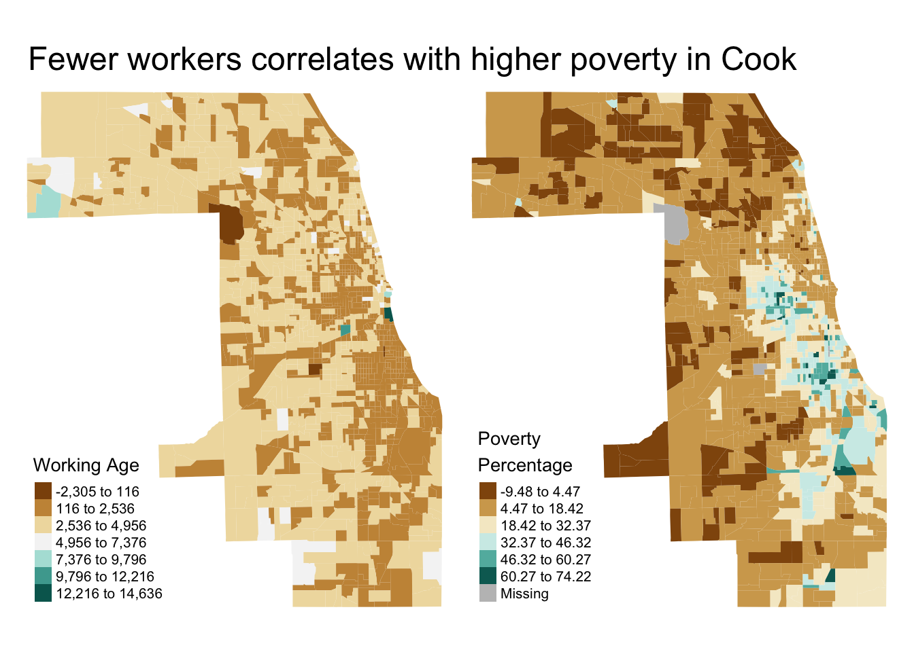
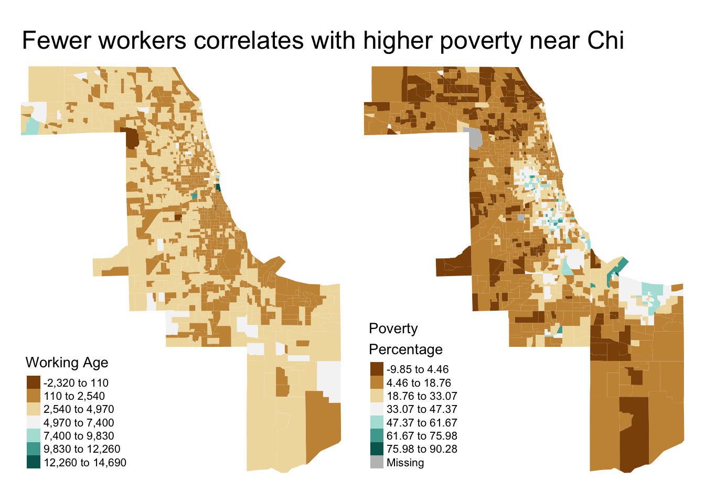

Chapter 4 Example uses
4.1 Data subsetting
load_data offers a few tools to help subset data on first load. To get a better sense of how these tools can be put towards practical use, let’s walk through a quick and dirty spatial investigation of poverty and working age population in Chicago.
We start by loading the data dictionary to see what data is available and into what themes they are categorized. This lets us request a subset of the full data set, which minimizes the amount of data in our environment at a time.
# See what data is available
data_dictionary <- load_oeps_dictionary(scale='tract')
# if working in RStudio, we recommend:
# View(data_dictionary)
data_dictionary
#> Theme 1980 1990 2000 2010 Latest Longitudinal Variable
#> 432 Geography x x x x x x HEROP_ID
#> 433 Geography x x x x x x GEOID
#> 434 Geography x x x x x x TRACTCE
#> 435 Geography <NA> <NA> <NA> <NA> x x ZIP
#> 436 Geography x x x x x x COUNTYFP
#> 437 Geography x x x x x x STATEFP
#> 438 Social x x x x x x TotPop
#> 439 Social <NA> <NA> <NA> x x <NA> TotVetPop
#> 440 Social <NA> <NA> <NA> <NA> x <NA> TotPopHh
#> 441 Social x x x x x x TotUnits
#> 442 Social <NA> <NA> <NA> <NA> x <NA> TotWrkE
#> 443 Social x x x x x x WhiteP
#> 444 Social x x x x x x BlackP
#> 445 Social x x x x x x AmIndP
#> 446 Social x x x x x x AsianP
#> 447 Social x x x x x x PacIsP
#> 448 Social x x x x x x OtherP
#> 449 Social x x x x x x HispP
#> 450 Social x x x <NA> x <NA> ChildrenP
#> 451 Social x x x x x x Age15_24P
#> 452 Social x x x x x x Und45P
#> 453 Social x x x x x x Ovr65P
#> 454 Social x x x x x x Age0_4
#> 455 Social x x x x x x Age5_14
#> 456 Social x x x x x x Age15_19
#> 457 Social x x x x x x Age20_24
#> 458 Social x x x x x x Age15_44
#> 459 Social <NA> x x x x <NA> Age45_49
#> 460 Social <NA> x x x x <NA> Age50_54
#> 461 Social x <NA> <NA> <NA> <NA> <NA> Age45_54
#> 462 Social x x x x x x Age55_59
#> 463 Social x x x x x x Age60_64
#> 464 Social x x x x x x AgeOv65
#> 465 Social <NA> <NA> <NA> <NA> x <NA> AgeOv18
#> 466 Social x x x x x x Age18_64
#> 467 Social <NA> <NA> x x x <NA> DisbP
#> 468 Social x x x x x x NoHsP
#> 469 Social <NA> <NA> <NA> x x <NA> VetP
#> 470 Social <NA> <NA> <NA> <NA> x <NA> NonRelFhhP
#> 471 Social <NA> <NA> <NA> <NA> x <NA> NonRelNfhhP
#> 472 Social <NA> <NA> <NA> <NA> x <NA> BedCnt
#> 473 Social <NA> <NA> <NA> <NA> x <NA> PntInTm
#> 474 Social <NA> <NA> <NA> <NA> x <NA> YrlyBedCnt
#> 475 Economic x x x x x x UnempP
#> 476 Economic x x x x x x PovP
#> 477 Economic <NA> <NA> <NA> x x <NA> MedInc
#> 478 Economic <NA> <NA> <NA> x x <NA> PciE
#> 479 Economic <NA> <NA> <NA> <NA> x <NA> ForDqP
#> 480 Economic <NA> <NA> <NA> <NA> x <NA> ForDqTot
#> 481 Economic <NA> <NA> <NA> x x <NA> GiniCoeff
#> 482 Economic <NA> <NA> <NA> <NA> x <NA> EduP
#> 483 Economic <NA> <NA> <NA> <NA> x <NA> HghRskP
#> 484 Economic <NA> <NA> <NA> <NA> x <NA> HltCrP
#> 485 Economic <NA> <NA> <NA> <NA> x <NA> RetailP
#> 486 Economic <NA> <NA> <NA> <NA> x <NA> EssnWrkE
#> 487 Economic <NA> <NA> <NA> <NA> x <NA> EssnWrkP
#> 488 Environment <NA> <NA> <NA> <NA> x <NA> NoIntP
#> 489 Environment x x x x x x VacantP
#> 490 Environment <NA> <NA> <NA> <NA> x <NA> MobileP
#> 491 Environment <NA> <NA> <NA> <NA> x <NA> LngTermP
#> 492 Environment <NA> <NA> <NA> <NA> x <NA> RentalP
#> 493 Environment <NA> <NA> <NA> <NA> x <NA> UnitDens
#> 494 Environment <NA> <NA> <NA> <NA> x <NA> Ruca1
#> 495 Environment <NA> <NA> <NA> <NA> x <NA> Ruca2
#> 496 Environment <NA> <NA> <NA> <NA> x <NA> Rurality
#> 497 Geography <NA> <NA> <NA> <NA> x <NA> AreaSqMi
#> 498 Environment <NA> <NA> <NA> <NA> x <NA> AlcTot
#> 499 Environment <NA> <NA> <NA> <NA> x <NA> AlcDens
#> 500 Environment <NA> <NA> <NA> <NA> x <NA> AlcPerCap
#> 501 Environment <NA> <NA> <NA> <NA> x <NA> Ndvi
#> 502 Environment <NA> <NA> <NA> <NA> x <NA> MoudMinDis
#> 503 Environment <NA> <NA> <NA> <NA> x <NA> BupMinDis
#> 504 Environment <NA> <NA> <NA> <NA> x <NA> BupTmDr
#> 505 Environment <NA> <NA> <NA> <NA> x <NA> BupCntDr30
#> 506 Environment <NA> <NA> <NA> <NA> x <NA> MetMinDis
#> 507 Environment <NA> <NA> <NA> <NA> x <NA> MetTmDr
#> 508 Environment <NA> <NA> <NA> <NA> x <NA> MetCntDr30
#> 509 Environment <NA> <NA> <NA> <NA> x <NA> NalMinDis
#> 510 Environment <NA> <NA> <NA> <NA> x <NA> NalTmDr
#> 511 Environment <NA> <NA> <NA> <NA> x <NA> NalCntDr30
#> 512 Environment <NA> <NA> <NA> <NA> x <NA> BupTmWk
#> 513 Environment <NA> <NA> <NA> <NA> x <NA> BupCntWk60
#> 514 Environment <NA> <NA> <NA> <NA> x <NA> BupCntWk30
#> 515 Environment <NA> <NA> <NA> <NA> x <NA> MetTmWk
#> 516 Environment <NA> <NA> <NA> <NA> x <NA> MetCntWk30
#> 517 Environment <NA> <NA> <NA> <NA> x <NA> MetCntWk60
#> 518 Environment <NA> <NA> <NA> <NA> x <NA> NalTmWk
#> 519 Environment <NA> <NA> <NA> <NA> x <NA> NalCntWk60
#> 520 Environment <NA> <NA> <NA> <NA> x <NA> NalCntWk30
#> 521 Environment <NA> <NA> <NA> <NA> x <NA> BupTmBk
#> 522 Environment <NA> <NA> <NA> <NA> x <NA> BupCntBk60
#> 523 Environment <NA> <NA> <NA> <NA> x <NA> BupCntBk30
#> 524 Environment <NA> <NA> <NA> <NA> x <NA> MetTmBk
#> 525 Environment <NA> <NA> <NA> <NA> x <NA> MetCntBk60
#> 526 Environment <NA> <NA> <NA> <NA> x <NA> MetCntBk30
#> 527 Environment <NA> <NA> <NA> <NA> x <NA> NalTmBk
#> 528 Environment <NA> <NA> <NA> <NA> x <NA> NalCntBk60
#> 529 Environment <NA> <NA> <NA> <NA> x <NA> NalCntBk30
#> 530 Environment <NA> <NA> <NA> <NA> x <NA> FqhcMinDis
#> 531 Environment <NA> <NA> <NA> <NA> x <NA> FqhcTmDr
#> 532 Environment <NA> <NA> <NA> <NA> x <NA> FqhcCntDr
#> 533 Environment <NA> <NA> <NA> <NA> x <NA> HospMinDis
#> 534 Environment <NA> <NA> <NA> <NA> x <NA> HospTmDr
#> 535 Environment <NA> <NA> <NA> <NA> x <NA> HospCntDr
#> 536 Environment <NA> <NA> <NA> <NA> x <NA> RxMinDis
#> 537 Environment <NA> <NA> <NA> <NA> x <NA> RxTmDr
#> 538 Environment <NA> <NA> <NA> <NA> x <NA> RxCntDr
#> 539 Environment <NA> <NA> <NA> <NA> x <NA> MhMinDis
#> 540 Environment <NA> <NA> <NA> <NA> x <NA> MhTmDr
#> 541 Environment <NA> <NA> <NA> <NA> x <NA> MhCntDr
#> 542 Environment <NA> <NA> <NA> <NA> x <NA> SutMinDis
#> 543 Environment <NA> <NA> <NA> <NA> x <NA> SutTmDr
#> 544 Environment <NA> <NA> <NA> <NA> x <NA> SutCntDr
#> 545 Environment <NA> <NA> <NA> <NA> x <NA> OtpMinDis
#> 546 Environment <NA> <NA> <NA> <NA> x <NA> OtpTmDr
#> 547 Environment <NA> <NA> <NA> <NA> x <NA> OtpCntDr
#> 548 Environment <NA> <NA> <NA> <NA> x <NA> TotPcp
#> 549 Environment <NA> <NA> <NA> <NA> x <NA> TotSp
#> 550 Environment <NA> <NA> <NA> <NA> x <NA> PcpPer100k
#> 551 Environment <NA> <NA> <NA> <NA> x <NA> SpPer100k
#> 552 Composite <NA> <NA> <NA> <NA> x <NA> SocEcAdvIn
#> 553 Composite <NA> <NA> <NA> <NA> x <NA> LimMobInd
#> 554 Composite <NA> <NA> <NA> <NA> x <NA> UrbCoreInd
#> 555 Composite <NA> <NA> <NA> <NA> x <NA> MicaInd
#> 556 Composite <NA> <NA> <NA> <NA> x <NA> NeighbTyp
#> 557 Composite <NA> <NA> <NA> <NA> x <NA> SviTh1
#> 558 Composite <NA> <NA> <NA> <NA> x <NA> SviTh2
#> 559 Composite <NA> <NA> <NA> <NA> x <NA> SviTh3
#> 560 Composite <NA> <NA> <NA> <NA> x <NA> SviTh4
#> 561 Composite <NA> <NA> <NA> <NA> x <NA> SviSmryRnk
#> Description
#> 432 A derived unique id corresponding to the relevant geographic unit.
#> 433 Eleven digit unique geographic identifier consisting of the STATEFP, COUNTYFP, and TRACTCE.
#> 434 Six digit geographic key that identifies tracts.
#> 435 Predominant zip code.
#> 436 Three digit geographic key that identifies counties within a given state.
#> 437 Two digit geographic key that uniquely identifies states and territories.
#> 438 Estimated total population
#> 439 Total veteran population
#> 440 Total number of people in households
#> 441 Count of total housing units
#> 442 Estimated count of working population
#> 443 Percentage of population with race identified as white alone
#> 444 Percentage of population with race identified as Black or African American alone
#> 445 Percentage of population with race identified as Native American or Alaska Native alone
#> 446 Percentage of population with race identified as Asian alone
#> 447 Percentage of population with race identified as Native Hawaiian and Other Pacific Islander alone
#> 448 Percentage of Population with race not mentioned in any of the options above (includes two race or more races)
#> 449 Percentage of population with ethnicity identified as of Hispanic or Latinx origin
#> 450 Percentage of population under age 18
#> 451 Percentage of population between ages of 15 & 24
#> 452 Percentage of population below 45 years of age
#> 453 Percentage of population over 65
#> 454 Total population between age 0-4
#> 455 Total population between age 5-14
#> 456 Total population between age 15-19
#> 457 Total population between age 20-24
#> 458 Total population between age 15-44
#> 459 Total population between age 45-49
#> 460 Total population between age 50-54
#> 461 Total population between age 45-54
#> 462 Total population between age 55-59
#> 463 Total population between age 60-64
#> 464 Total population at or over age 65
#> 465 Total population at or over age 18
#> 466 Total adult population under age 65
#> 467 Percentage of civilian non institutionalized population with a disability
#> 468 Percentage of population 25 years and over without a high school degree
#> 469 Percent of population that are veterans
#> 470 Percent of people living in family households that are not related to family
#> 471 Percent of people living in non-family households that are not related
#> 472 Number of beds available to homeless individuals in a continuum of care available at the time of the census
#> 473 Number of housing-insecure individuals at a shelter on the day of the count
#> 474 Number of beds available to homeless populations in group quarters available year-round
#> 475 The number of unemployed individuals as a percentage of the civilian labor force
#> 476 Number of individuals earning below the poverty income threshold as a percentage of the total population
#> 477 Median income for individuals in the past 12 months (in 2018 inflation-adjusted dollars)
#> 478 Per capita income for individuals in the past 12 months (in 2018 inflation-adjusted dollars)
#> 479 Estimated percent of mortgages to start foreclosure process or be seriously delinquent during the 2008 Recession
#> 480 Estimated number of mortgages to start foreclosure process or be seriously delinquent during the 2008 Recession
#> 481 Income Inequality (Gini Coefficient)
#> 482 Percentage of population employed in educational services industry
#> 483 Percentage of population employed in following industries: agriculture, rorestry, fishing and hunting, mining, quarrying, oil and gas extraction, construction, manufacturing, utilities
#> 484 Percentage of population employed in health care and social assistance industries
#> 485 Percentage of population employed in retail trade industry
#> 486 Estimated count of population employed in essential occupations.
#> 487 Percentage of population employed in essential occupations.
#> 488 Percentage of Households without Internet access
#> 489 Percentage of vacant housing units
#> 490 Percentage of total housing units categorized as mobile housing structures
#> 491 Percentage of population who moved into their current housing more than 20 years ago
#> 492 Percentage of occupied housing units that are rented
#> 493 Number of housing units per square mile of land area
#> 494 Primary RUCA Code
#> 495 Secondary RUCA Code
#> 496 Urban/Suburban/Rural
#> 497 Land area of geography in sq miles
#> 498 Total number of alcohol outlets
#> 499 Number of alcohol outlets per square mile
#> 500 Number of alcohol outlets per capita
#> 501 Average normalized difference vegetation index, a measure of greenness used to determine the amount of vegetation in an area, value from all pixel values in each Census tract
#> 502 Euclidean distance (miles) to nearest MOUD (all types)
#> 503 Euclidean distance (miles) to nearest buprenorphine provider
#> 504 Driving time (minutes) to nearest buprenorphine provider
#> 505 Count of methadone providers in 30 minute drive time threshold
#> 506 Euclidean distance (miles) to nearest methadone provider
#> 507 Driving time (minutes) to nearest methadone provider
#> 508 Count of methadone providers in 30 minute drive time threshold
#> 509 Euclidean distance (miles) to nearest naltrexone/Vivitrol provider
#> 510 Driving time (minutes) to nearest naltrexone provider
#> 511 Count of naltrexone providers in 30 minute drive time threshold
#> 512 Walking time (minutes) to nearest buprenorphine provider
#> 513 Count of buprenorphine providers in 60 minute walking time threshold
#> 514 Count of buprenorphine providers in 30 minute walking time threshold
#> 515 Walking time (minutes) to nearest methadone provider
#> 516 Count of methadone providers in 60 minute walking time threshold
#> 517 Count of methadone providers in 30 minute walking time threshold
#> 518 Walking time (minutes) to nearest naltrexone provider
#> 519 Count of naltrexone providers in 60 minute walking time threshold
#> 520 Count of naltrexone providers in 30 minute walking time threshold
#> 521 Biking time (minutes) to nearest buprenorphine provider
#> 522 Count of buprenorphine providers in 60 minute biking time threshold
#> 523 Count of buprenorphine providers in 30 minute biking time threshold
#> 524 Biking time (minutes) to nearest methadone provider
#> 525 Count of methadone providers in 60 minute biking time threshold
#> 526 Count of methadone providers in 30 minute biking time threshold
#> 527 Biking time (minutes) to nearest naltrexone provider
#> 528 Count of naltrexone providers in 60 minute biking time threshold
#> 529 Count of naltrexone providers in 30 minute biking time threshold
#> 530 Euclidean distance* from tract/zip centroid to nearest FQHC, in miles
#> 531 Driving time from tract/zip origin centroid to the nearest tract/zip FQHC destination centroid, in minutes
#> 532 Count of FQHCs within a 30-minute driving threshold
#> 533 Euclidean distance* from tract/zip centroid to nearest hospital, in miles
#> 534 Driving time from tract/zip origin centroid to the nearest tract/zip hospital destination centroid, in minutes
#> 535 Count of hospitals within a 30-minute driving threshold
#> 536 Euclidean distance* from tract/zip centroid to nearest pharmacy, in miles
#> 537 Driving time from tract/zip origin centroid to the nearest tract/zip pharmacy destination centroid, in minutes
#> 538 Count of pharmacies within a 30-minute driving threshold
#> 539 Euclidean distance* from tract/zip centroid to nearest mental health provider, in miles
#> 540 Driving time from tract/zip origin centroid to the nearest tract/zip mental health provider destination centroid, in minutes
#> 541 Count of MH providers within a 30-minute driving threshold
#> 542 Euclidean distance* from tract/zip centroid to nearest SUT service location, in miles
#> 543 Driving time from tract/zip origin centroid to the nearest tract/zip SUT destination centroid, in minutes
#> 544 Count of SUT services within a 30-minute driving threshold
#> 545 Euclidean distance* from tract/zip centroid to nearest OTP service location, in miles
#> 546 Driving time from tract/zip origin centroid to the nearest tract/zip OTP destination centroid, in minutes
#> 547 Count of OTPs within a 30-minute driving threshold
#> 548 Number of PCPs in area
#> 549 Number of specialty physicains in area
#> 550 PCPs per total Population X 100,000
#> 551 Specialty Physicians per total Population X 100,000
#> 552 Raw Socioeconomic Advantage Index (https://sdohatlas.github.io/)
#> 553 Raw Limited Mobility Index (https://sdohatlas.github.io/)
#> 554 Raw Urban Core Opportunity Index (https://sdohatlas.github.io/)
#> 555 Raw Mixed Immigrant Cohesion and Accessibility (MICA) Index (https://sdohatlas.github.io/)
#> 556 Categorical, one of seven neighborhood (tract-level) typologies: 1 = Rural Affordable; 2 = Suburban Affluent; 3 = Suburban Affordable; 4 = Extreme Poverty; 5 = Multilingual Working; 6 = Urban Core Opportunity; 7 = Sparse Areas
#> 557 SVI Ranking, Theme 1: Socioeconomic
#> 558 SVI Ranking, Theme 2: Household Composition & Disability
#> 559 SVI Ranking, Theme 3: Minority Status & Language
#> 560 SVI Ranking, Theme 4: Housing Type & Transportation
#> 561 Overall summary ranking
#> Metadata Location
#> 432 <NA>
#> 433 <NA>
#> 434 <NA>
#> 435 <NA>
#> 436 <NA>
#> 437 <NA>
#> 438 https://github.com/GeoDaCenter/opioid-policy-scan/blob/main/data_final/metadata/Age_2018.md
#> 439 https://github.com/GeoDaCenter/opioid-policy-scan/blob/main/data_final/metadata/VetPop.md
#> 440 https://github.com/GeoDaCenter/opioid-policy-scan/blob/main/data_final/metadata/HouseholdType.md
#> 441 https://github.com/GeoDaCenter/opioid-policy-scan/blob/main/data_final/metadata/Housing_2018.md
#> 442 https://github.com/GeoDaCenter/opioid-policy-scan/blob/main/data_final/metadata/Job_Categories_byIndustry_2018.md
#> 443 https://github.com/GeoDaCenter/opioid-policy-scan/blob/main/data_final/metadata/Race_Ethnicity_2018.md
#> 444 https://github.com/GeoDaCenter/opioid-policy-scan/blob/main/data_final/metadata/Race_Ethnicity_2018.md
#> 445 https://github.com/GeoDaCenter/opioid-policy-scan/blob/main/data_final/metadata/Race_Ethnicity_2018.md
#> 446 https://github.com/GeoDaCenter/opioid-policy-scan/blob/main/data_final/metadata/Race_Ethnicity_2018.md
#> 447 https://github.com/GeoDaCenter/opioid-policy-scan/blob/main/data_final/metadata/Race_Ethnicity_2018.md
#> 448 https://github.com/GeoDaCenter/opioid-policy-scan/blob/main/data_final/metadata/Race_Ethnicity_2018.md
#> 449 https://github.com/GeoDaCenter/opioid-policy-scan/blob/main/data_final/metadata/Race_Ethnicity_2018.md
#> 450 https://github.com/GeoDaCenter/opioid-policy-scan/blob/main/data_final/metadata/Age_2018.md
#> 451 https://github.com/GeoDaCenter/opioid-policy-scan/blob/main/data_final/metadata/Age_2018.md
#> 452 https://github.com/GeoDaCenter/opioid-policy-scan/blob/main/data_final/metadata/Age_2018.md
#> 453 https://github.com/GeoDaCenter/opioid-policy-scan/blob/main/data_final/metadata/Age_2018.md
#> 454 https://github.com/GeoDaCenter/opioid-policy-scan/blob/main/data_final/metadata/Age_2018.md
#> 455 https://github.com/GeoDaCenter/opioid-policy-scan/blob/main/data_final/metadata/Age_2018.md
#> 456 https://github.com/GeoDaCenter/opioid-policy-scan/blob/main/data_final/metadata/Age_2018.md
#> 457 https://github.com/GeoDaCenter/opioid-policy-scan/blob/main/data_final/metadata/Age_2018.md
#> 458 https://github.com/GeoDaCenter/opioid-policy-scan/blob/main/data_final/metadata/Age_2018.md
#> 459 https://github.com/GeoDaCenter/opioid-policy-scan/blob/main/data_final/metadata/Age_2018.md
#> 460 https://github.com/GeoDaCenter/opioid-policy-scan/blob/main/data_final/metadata/Age_2018.md
#> 461 https://github.com/GeoDaCenter/opioid-policy-scan/blob/main/data_final/metadata/Age_2018.md
#> 462 https://github.com/GeoDaCenter/opioid-policy-scan/blob/main/data_final/metadata/Age_2018.md
#> 463 https://github.com/GeoDaCenter/opioid-policy-scan/blob/main/data_final/metadata/Age_2018.md
#> 464 https://github.com/GeoDaCenter/opioid-policy-scan/blob/main/data_final/metadata/Age_2018.md
#> 465 https://github.com/GeoDaCenter/opioid-policy-scan/blob/main/data_final/metadata/Age_2018.md
#> 466 https://github.com/GeoDaCenter/opioid-policy-scan/blob/main/data_final/metadata/Age_2018.md
#> 467 https://github.com/GeoDaCenter/opioid-policy-scan/blob/main/data_final/metadata/Other_Demographic_2018.md
#> 468 https://github.com/GeoDaCenter/opioid-policy-scan/blob/main/data_final/metadata/Other_Demographic_2018.md
#> 469 https://github.com/GeoDaCenter/opioid-policy-scan/blob/main/data_final/metadata/VetPop.md
#> 470 https://github.com/GeoDaCenter/opioid-policy-scan/blob/main/data_final/metadata/HouseholdType.md
#> 471 https://github.com/GeoDaCenter/opioid-policy-scan/blob/main/data_final/metadata/HouseholdType.md
#> 472 https://github.com/GeoDaCenter/opioid-policy-scan/blob/main/data_final/metadata/HomelessPop.md
#> 473 https://github.com/GeoDaCenter/opioid-policy-scan/blob/main/data_final/metadata/HomelessPop.md
#> 474 https://github.com/GeoDaCenter/opioid-policy-scan/blob/main/data_final/metadata/HomelessPop.md
#> 475 https://github.com/GeoDaCenter/opioid-policy-scan/blob/main/data_final/metadata/Economic_2018.md
#> 476 https://github.com/GeoDaCenter/opioid-policy-scan/blob/main/data_final/metadata/Economic_2018.md
#> 477 https://github.com/GeoDaCenter/opioid-policy-scan/blob/main/data_final/metadata/Economic_2018.md
#> 478 https://github.com/GeoDaCenter/opioid-policy-scan/blob/main/data_final/metadata/Economic_2018.md
#> 479 https://github.com/GeoDaCenter/opioid-policy-scan/blob/main/data_final/metadata/ForeclosureRate.md
#> 480 https://github.com/GeoDaCenter/opioid-policy-scan/blob/main/data_final/metadata/ForeclosureRate.md
#> 481 https://github.com/GeoDaCenter/opioid-policy-scan/blob/main/data_final/metadata/Economic_2018.md
#> 482 https://github.com/GeoDaCenter/opioid-policy-scan/blob/main/data_final/metadata/Job_Categories_byIndustry_2018.md
#> 483 https://github.com/GeoDaCenter/opioid-policy-scan/blob/main/data_final/metadata/Job_Categories_byIndustry_2018.md
#> 484 https://github.com/GeoDaCenter/opioid-policy-scan/blob/main/data_final/metadata/Job_Categories_byIndustry_2018.md
#> 485 https://github.com/GeoDaCenter/opioid-policy-scan/blob/main/data_final/metadata/Job_Categories_byIndustry_2018.md
#> 486 https://github.com/GeoDaCenter/opioid-policy-scan/blob/main/data_final/metadata/Job_Categories_byOccupation_2018.md
#> 487 https://github.com/GeoDaCenter/opioid-policy-scan/blob/main/data_final/metadata/Job_Categories_byOccupation_2018.md
#> 488 https://github.com/GeoDaCenter/opioid-policy-scan/blob/main/data_final/metadata/Internet_2019.md
#> 489 https://github.com/GeoDaCenter/opioid-policy-scan/blob/main/data_final/metadata/Housing_2018.md
#> 490 https://github.com/GeoDaCenter/opioid-policy-scan/blob/main/data_final/metadata/Housing_2018.md
#> 491 https://github.com/GeoDaCenter/opioid-policy-scan/blob/main/data_final/metadata/Housing_2018.md
#> 492 https://github.com/GeoDaCenter/opioid-policy-scan/blob/main/data_final/metadata/Housing_2018.md
#> 493 https://github.com/GeoDaCenter/opioid-policy-scan/blob/main/data_final/metadata/Housing_2018.md
#> 494 https://github.com/GeoDaCenter/opioid-policy-scan/blob/main/data_final/metadata/Rural_Urban_Classification_County.md
#> 495 https://github.com/GeoDaCenter/opioid-policy-scan/blob/main/data_final/metadata/Rural_Urban_Classification_County.md
#> 496 https://github.com/GeoDaCenter/opioid-policy-scan/blob/main/data_final/metadata/Rural_Urban_Classification_County.md
#> 497 https://github.com/GeoDaCenter/opioid-policy-scan/blob/main/data_final/metadata/AlcoholOutlets_2018.md
#> 498 https://github.com/GeoDaCenter/opioid-policy-scan/blob/main/data_final/metadata/AlcoholOutlets_2018.md
#> 499 https://github.com/GeoDaCenter/opioid-policy-scan/blob/main/data_final/metadata/AlcoholOutlets_2018.md
#> 500 https://github.com/GeoDaCenter/opioid-policy-scan/blob/main/data_final/metadata/AlcoholOutlets_2018.md
#> 501 https://github.com/GeoDaCenter/opioid-policy-scan/blob/main/data_final/metadata/NDVI.md
#> 502 https://github.com/GeoDaCenter/opioid-policy-scan/blob/main/data_final/metadata/Access_MOUDs.md
#> 503 https://github.com/GeoDaCenter/opioid-policy-scan/blob/main/data_final/metadata/Access_MOUDs.md
#> 504 https://github.com/GeoDaCenter/opioid-policy-scan/blob/main/data_final/metadata/Access_MOUDs.md
#> 505 https://github.com/GeoDaCenter/opioid-policy-scan/blob/main/data_final/metadata/Access_MOUDs.md
#> 506 https://github.com/GeoDaCenter/opioid-policy-scan/blob/main/data_final/metadata/Access_MOUDs.md
#> 507 https://github.com/GeoDaCenter/opioid-policy-scan/blob/main/data_final/metadata/Access_MOUDs.md
#> 508 https://github.com/GeoDaCenter/opioid-policy-scan/blob/main/data_final/metadata/Access_MOUDs.md
#> 509 https://github.com/GeoDaCenter/opioid-policy-scan/blob/main/data_final/metadata/Access_MOUDs.md
#> 510 https://github.com/GeoDaCenter/opioid-policy-scan/blob/main/data_final/metadata/Access_MOUDs.md
#> 511 https://github.com/GeoDaCenter/opioid-policy-scan/blob/main/data_final/metadata/Access_MOUDs.md
#> 512 https://github.com/GeoDaCenter/opioid-policy-scan/blob/main/data_final/metadata/Access_MOUDs.md
#> 513 https://github.com/GeoDaCenter/opioid-policy-scan/blob/main/data_final/metadata/Access_MOUDs.md
#> 514 https://github.com/GeoDaCenter/opioid-policy-scan/blob/main/data_final/metadata/Access_MOUDs.md
#> 515 https://github.com/GeoDaCenter/opioid-policy-scan/blob/main/data_final/metadata/Access_MOUDs.md
#> 516 https://github.com/GeoDaCenter/opioid-policy-scan/blob/main/data_final/metadata/Access_MOUDs.md
#> 517 https://github.com/GeoDaCenter/opioid-policy-scan/blob/main/data_final/metadata/Access_MOUDs.md
#> 518 https://github.com/GeoDaCenter/opioid-policy-scan/blob/main/data_final/metadata/Access_MOUDs.md
#> 519 https://github.com/GeoDaCenter/opioid-policy-scan/blob/main/data_final/metadata/Access_MOUDs.md
#> 520 https://github.com/GeoDaCenter/opioid-policy-scan/blob/main/data_final/metadata/Access_MOUDs.md
#> 521 https://github.com/GeoDaCenter/opioid-policy-scan/blob/main/data_final/metadata/Access_MOUDs.md
#> 522 https://github.com/GeoDaCenter/opioid-policy-scan/blob/main/data_final/metadata/Access_MOUDs.md
#> 523 https://github.com/GeoDaCenter/opioid-policy-scan/blob/main/data_final/metadata/Access_MOUDs.md
#> 524 https://github.com/GeoDaCenter/opioid-policy-scan/blob/main/data_final/metadata/Access_MOUDs.md
#> 525 https://github.com/GeoDaCenter/opioid-policy-scan/blob/main/data_final/metadata/Access_MOUDs.md
#> 526 https://github.com/GeoDaCenter/opioid-policy-scan/blob/main/data_final/metadata/Access_MOUDs.md
#> 527 https://github.com/GeoDaCenter/opioid-policy-scan/blob/main/data_final/metadata/Access_MOUDs.md
#> 528 https://github.com/GeoDaCenter/opioid-policy-scan/blob/main/data_final/metadata/Access_MOUDs.md
#> 529 https://github.com/GeoDaCenter/opioid-policy-scan/blob/main/data_final/metadata/Access_MOUDs.md
#> 530 https://github.com/GeoDaCenter/opioid-policy-scan/blob/main/data_final/metadata/Access_FQHCs_MinDistance.md
#> 531 https://github.com/GeoDaCenter/opioid-policy-scan/blob/main/data_final/metadata/Access_FQHCs_MinDistance.md
#> 532 https://github.com/GeoDaCenter/opioid-policy-scan/blob/main/data_final/metadata/Access_FQHCs_MinDistance.md
#> 533 https://github.com/GeoDaCenter/opioid-policy-scan/blob/main/data_final/metadata/Acesss_Hospitals_MinDistance.md
#> 534 https://github.com/GeoDaCenter/opioid-policy-scan/blob/main/data_final/metadata/Acesss_Hospitals_MinDistance.md
#> 535 https://github.com/GeoDaCenter/opioid-policy-scan/blob/main/data_final/metadata/Acesss_Hospitals_MinDistance.md
#> 536 https://github.com/GeoDaCenter/opioid-policy-scan/blob/main/data_final/metadata/Access_Pharmacies_MinDistance.md
#> 537 https://github.com/GeoDaCenter/opioid-policy-scan/blob/main/data_final/metadata/Access_Pharmacies_MinDistance.md
#> 538 https://github.com/GeoDaCenter/opioid-policy-scan/blob/main/data_final/metadata/Access_Pharmacies_MinDistance.md
#> 539 https://github.com/GeoDaCenter/opioid-policy-scan/blob/main/data_final/metadata/Access_MentalHealth_MinDistance.md
#> 540 https://github.com/GeoDaCenter/opioid-policy-scan/blob/main/data_final/metadata/Access_MentalHealth_MinDistance.md
#> 541 https://github.com/GeoDaCenter/opioid-policy-scan/blob/main/data_final/metadata/Access_MentalHealth_MinDistance.md
#> 542 https://github.com/GeoDaCenter/opioid-policy-scan/blob/main/data_final/metadata/Access_SubstanceUseTreatment.md
#> 543 https://github.com/GeoDaCenter/opioid-policy-scan/blob/main/data_final/metadata/Access_SubstanceUseTreatment.md
#> 544 https://github.com/GeoDaCenter/opioid-policy-scan/blob/main/data_final/metadata/Access_SubstanceUseTreatment.md
#> 545 https://github.com/GeoDaCenter/opioid-policy-scan/blob/main/data_final/metadata/Access_OpioidUseTreatment.md
#> 546 https://github.com/GeoDaCenter/opioid-policy-scan/blob/main/data_final/metadata/Access_OpioidUseTreatment.md
#> 547 https://github.com/GeoDaCenter/opioid-policy-scan/blob/main/data_final/metadata/Access_OpioidUseTreatment.md
#> 548 https://github.com/GeoDaCenter/opioid-policy-scan/blob/main/data_final/metadata/Health_PCPs.md
#> 549 https://github.com/GeoDaCenter/opioid-policy-scan/blob/main/data_final/metadata/Health_PCPs.md
#> 550 https://github.com/GeoDaCenter/opioid-policy-scan/blob/main/data_final/metadata/Health_PCPs.md
#> 551 https://github.com/GeoDaCenter/opioid-policy-scan/blob/main/data_final/metadata/Health_PCPs.md
#> 552 <NA>
#> 553 <NA>
#> 554 <NA>
#> 555 <NA>
#> 556 https://github.com/GeoDaCenter/opioid-policy-scan/blob/main/data_final/metadata/SDOH_2014.md
#> 557 https://github.com/GeoDaCenter/opioid-policy-scan/blob/main/data_final/metadata/SVI_2018.md
#> 558 https://github.com/GeoDaCenter/opioid-policy-scan/blob/main/data_final/metadata/SVI_2018.md
#> 559 https://github.com/GeoDaCenter/opioid-policy-scan/blob/main/data_final/metadata/SVI_2018.md
#> 560 https://github.com/GeoDaCenter/opioid-policy-scan/blob/main/data_final/metadata/SVI_2018.md
#> 561 https://github.com/GeoDaCenter/opioid-policy-scan/blob/main/data_final/metadata/SVI_2018.md
#> Source
#> 432 Healthy Regions & Policies Lab, UIUC
#> 433 Tiger/Line 2018; Tiger/Line 2010
#> 434 Tiger/Line 2018; Tiger/Line 2010
#> 435 HUD's PD&R
#> 436 Tiger/Line 2018; Tiger/Line 2010
#> 437 Tiger/Line 2018; Tiger/Line 2010
#> 438 ACS 2018, 5-Year; Census 2010; IPUMS NHGIS
#> 439 ACS 2018, 5-Year; ACS 2012, 5-Year
#> 440 ACS 2018, 5-Year
#> 441 ACS 2018, 5-Year; Census 2010; Social Explorer
#> 442 ACS 2018, 5-Year
#> 443 ACS 2018, 5-Year; Census 2010; IPUMS NHGIS
#> 444 ACS 2018, 5-Year; Census 2010; IPUMS NHGIS
#> 445 ACS 2018, 5-Year; Census 2010; IPUMS NHGIS
#> 446 ACS 2018, 5-Year; Census 2010; IPUMS NHGIS
#> 447 ACS 2018, 5-Year; Census 2010; IPUMS NHGIS
#> 448 ACS 2018, 5-Year; Census 2010; IPUMS NHGIS
#> 449 ACS 2018, 5-Year; Census 2010; IPUMS NHGIS
#> 450 ACS 2018, 5-Year
#> 451 ACS 2018, 5-Year; Census 2010; IPUMS NHGIS
#> 452 ACS 2018, 5-Year; Census 2010; IPUMS NHGIS
#> 453 ACS 2018, 5-Year; Census 2010; IPUMS NHGIS
#> 454 ACS 2018, 5-Year; Census 2010; IPUMS NHGIS
#> 455 ACS 2018, 5-Year; Census 2010; IPUMS NHGIS
#> 456 ACS 2018, 5-Year; Census 2010; IPUMS NHGIS
#> 457 ACS 2018, 5-Year; Census 2010; IPUMS NHGIS
#> 458 ACS 2018, 5-Year; Census 2010; IPUMS NHGIS
#> 459 ACS 2018, 5-Year; Census 2010; IPUMS NHGIS
#> 460 ACS 2018, 5-Year; Census 2010; IPUMS NHGIS
#> 461 IPUMS NHGIS
#> 462 ACS 2018, 5-Year; Census 2010; IPUMS NHGIS
#> 463 ACS 2018, 5-Year; Census 2010; IPUMS NHGIS
#> 464 ACS 2018, 5-Year; Census 2010; IPUMS NHGIS
#> 465 ACS 2018, 5-Year
#> 466 ACS 2018, 5-Year; Census 2010; IPUMS NHGIS
#> 467 ACS 2018, 5-Year; ACS 2012, 5-Year; IPUMS NHGIS
#> 468 ACS 2018, 5-Year; Census 2010; IPUMS NHGIS
#> 469 ACS 2017, 5-Year; ACS 2012, 5-Year
#> 470 ACS 2018, 5-Year; Acs 2012, 5-Year
#> 471 ACS 2018, 5-Year; Acs 2012, 5-Year
#> 472 HUD, 2018
#> 473 HUD, 2018
#> 474 HUD, 2018
#> 475 ACS 2018, 5-Year; ACS 2012, 5-Year; IPUMS NHGIS
#> 476 ACS 2018, 5-Year; ACS 2012, 5-Year; IPUMS NHGIS
#> 477 ACS 2018, 5-Year; ACS 2012, 5-Year
#> 478 ACS 2018, 5-Year; ACS 2012, 5-Year; IPUMS NHGIS
#> 479 HUD, 2018
#> 480 HUD, 2018
#> 481 ACS 2018, 5-Year
#> 482 ACS 2018, 5-Year
#> 483 ACS 2018, 5-Year
#> 484 ACS 2018, 5-Year
#> 485 ACS 2018, 5-Year
#> 486 ACS 2018, 5-Year
#> 487 ACS 2018, 5-Year
#> 488 ACS, 2019
#> 489 ACS 2018, 5-Year; ACS 2012, 5-Year; Social Explorer
#> 490 ACS 2018, 5-Year
#> 491 ACS 2018, 5-Year
#> 492 ACS 2018, 5-Year
#> 493 ACS 2018, 5-Year
#> 494 USDA-ERS 2010 & ACS 2018 5-Year
#> 495 USDA-ERS 2010 & ACS 2018 5-Year
#> 496 USDA-ERS 2010 & ACS 2018 5-Year
#> 497 InfoGroup, 2018
#> 498 InfoGroup, 2018
#> 499 InfoGroup, 2018
#> 500 InfoGroup, 2018
#> 501 Sentinel-2 MSI, 2018
#> 502 SAMHSA, 2019; Vivitrol, 2020; OSRM, 2020
#> 503 SAMHSA, 2019; Vivitrol, 2020; OSRM, 2020
#> 504 SAMHSA, 2019; Vivitrol, 2020; OSRM, 2020
#> 505 SAMHSA, 2019; Vivitrol, 2020; OSRM, 2020
#> 506 SAMHSA, 2019; Vivitrol, 2020; OSRM, 2020
#> 507 SAMHSA, 2019; Vivitrol, 2020; OSRM, 2020
#> 508 SAMHSA, 2019; Vivitrol, 2020; OSRM, 2020
#> 509 SAMHSA, 2019; Vivitrol, 2020; OSRM, 2020
#> 510 SAMHSA, 2019; Vivitrol, 2020; OSRM, 2020
#> 511 SAMHSA, 2019; Vivitrol, 2020; OSRM, 2020
#> 512 SAMHSA, 2019; Vivitrol, 2020; OSRM, 2020
#> 513 SAMHSA, 2019; Vivitrol, 2020; OSRM, 2020
#> 514 SAMHSA, 2019; Vivitrol, 2020; OSRM, 2020
#> 515 SAMHSA, 2019; Vivitrol, 2020; OSRM, 2020
#> 516 SAMHSA, 2019; Vivitrol, 2020; OSRM, 2020
#> 517 SAMHSA, 2019; Vivitrol, 2020; OSRM, 2020
#> 518 SAMHSA, 2019; Vivitrol, 2020; OSRM, 2020
#> 519 SAMHSA, 2019; Vivitrol, 2020; OSRM, 2020
#> 520 SAMHSA, 2019; Vivitrol, 2020; OSRM, 2020
#> 521 SAMHSA, 2019; Vivitrol, 2020; OSRM, 2020
#> 522 SAMHSA, 2019; Vivitrol, 2020; OSRM, 2020
#> 523 SAMHSA, 2019; Vivitrol, 2020; OSRM, 2020
#> 524 SAMHSA, 2019; Vivitrol, 2020; OSRM, 2020
#> 525 SAMHSA, 2019; Vivitrol, 2020; OSRM, 2020
#> 526 SAMHSA, 2019; Vivitrol, 2020; OSRM, 2020
#> 527 SAMHSA, 2019; Vivitrol, 2020; OSRM, 2020
#> 528 SAMHSA, 2019; Vivitrol, 2020; OSRM, 2020
#> 529 SAMHSA, 2019; Vivitrol, 2020; OSRM, 2020
#> 530 US Covid Atlas via HRSA, 2020
#> 531 US Covid Atlas via HRSA, 2020
#> 532 US Covid Atlas via HRSA, 2020
#> 533 CovidCareMap, 2020
#> 534 CovidCareMap, 2020
#> 535 CovidCareMap, 2020
#> 536 InfoGroup, 2019
#> 537 InfoGroup, 2019
#> 538 InfoGroup, 2019
#> 539 SAMHSA, 2020
#> 540 SAMHSA, 2020
#> 541 SAMHSA, 2020
#> 542 SAMHSA, 2020
#> 543 SAMHSA, 2020
#> 544 SAMHSA, 2020
#> 545 SAMSHA, 2021
#> 546 SAMSHA, 2021
#> 547 SAMSHA, 2021
#> 548 Dartmouth Atlas, 2010
#> 549 Dartmouth Atlas, 2010
#> 550 Dartmouth Atlas, 2010
#> 551 Dartmouth Atlas, 2010
#> 552 GeoDa Data and Lab; SDOH Atlas
#> 553 GeoDa Data and Lab; SDOH Atlas
#> 554 GeoDa Data and Lab; SDOH Atlas
#> 555 GeoDa Data and Lab; SDOH Atlas
#> 556 Kolak et al., 2020
#> 557 CDC, 2018
#> 558 CDC, 2018
#> 559 CDC, 2018
#> 560 CDC, 2018
#> 561 CDC, 2018
#> Source Long
#> 432 <NA>
#> 433 Tiger/Line 2018 Shapefiles; Tiger/Line 2010 Shapefiles
#> 434 Tiger/Line 2018 Shapefiles; Tiger/Line 2010 Shapefiles
#> 435 Housing and Urban Development Office of Policy and Development and Research
#> 436 Tiger/Line 2018 Shapefiles; Tiger/Line 2010 Shapefiles
#> 437 Tiger/Line 2018 Shapefiles; Tiger/Line 2010 Shapefiles
#> 438 American Community Survey 2014-2018 5 Year Estimate; 2010 Decennial Census; Integrated Public Use Microdata Series National Historic Geographic Information System
#> 439 American Community Survey 2014-2018 5 Year Estimate; American Community Survey 2008-2012 5 Year Estimate
#> 440 American Community Survey 2014-2018 5 Year Estimates
#> 441 American Community Survey 2014-2018 5 Year Estimate; American Community Survey 2008-2012; Social Explorer Historic Census Data on 2010 Geometries
#> 442 American Community Survey 2014-2018 5 Year Estimates
#> 443 American Community Survey 2014-2018 5 Year Estimate; 2010 Decennial Census; Integrated Public Use Microdata Series National Historic Geographic Information System
#> 444 American Community Survey 2014-2018 5 Year Estimate; 2010 Decennial Census; Integrated Public Use Microdata Series National Historic Geographic Information System
#> 445 American Community Survey 2014-2018 5 Year Estimate; 2010 Decennial Census; Integrated Public Use Microdata Series National Historic Geographic Information System
#> 446 American Community Survey 2014-2018 5 Year Estimate; 2010 Decennial Census; Integrated Public Use Microdata Series National Historic Geographic Information System
#> 447 American Community Survey 2014-2018 5 Year Estimate; 2010 Decennial Census; Integrated Public Use Microdata Series National Historic Geographic Information System
#> 448 American Community Survey 2014-2018 5 Year Estimate; 2010 Decennial Census; Integrated Public Use Microdata Series National Historic Geographic Information System
#> 449 American Community Survey 2014-2018 5 Year Estimate; 2010 Decennial Census; Integrated Public Use Microdata Series National Historic Geographic Information System
#> 450 American Community Survey 2014-2018 5 Year Estimate
#> 451 American Community Survey 2014-2018 5 Year Estimate; 2010 Decennial Census; Integrated Public Use Microdata Series National Historic Geographic Information System
#> 452 American Community Survey 2014-2018 5 Year Estimate; 2010 Decennial Census; Integrated Public Use Microdata Series National Historic Geographic Information System
#> 453 American Community Survey 2014-2018 5 Year Estimate; 2010 Decennial Census; Integrated Public Use Microdata Series National Historic Geographic Information System
#> 454 American Community Survey 2014-2018 5 Year Estimate; 2010 Decennial Census; Integrated Public Use Microdata Series National Historic Geographic Information System
#> 455 American Community Survey 2014-2018 5 Year Estimate; 2010 Decennial Census; Integrated Public Use Microdata Series National Historic Geographic Information System
#> 456 American Community Survey 2014-2018 5 Year Estimate; 2010 Decennial Census; Integrated Public Use Microdata Series National Historic Geographic Information System
#> 457 American Community Survey 2014-2018 5 Year Estimate; 2010 Decennial Census; Integrated Public Use Microdata Series National Historic Geographic Information System
#> 458 American Community Survey 2014-2018 5 Year Estimate; 2010 Decennial Census; Integrated Public Use Microdata Series National Historic Geographic Information System
#> 459 American Community Survey 2014-2018 5 Year Estimate; 2010 Decennial Census; Integrated Public Use Microdata Series National Historic Geographic Information System
#> 460 American Community Survey 2014-2018 5 Year Estimate
#> 461 Integrated Public Use Microdata Series National Historic Geographic Information System
#> 462 American Community Survey 2014-2018 5 Year Estimate; 2010 Decennial Census; Integrated Public Use Microdata Series National Historic Geographic Information System
#> 463 American Community Survey 2014-2018 5 Year Estimate; 2010 Decennial Census; Integrated Public Use Microdata Series National Historic Geographic Information System
#> 464 American Community Survey 2014-2018 5 Year Estimate; 2010 Decennial Census; Integrated Public Use Microdata Series National Historic Geographic Information System
#> 465 American Community Survey 2014-2018 5 Year Estimate; 2010 Decennial Census
#> 466 American Community Survey 2014-2018 5 Year Estimate; 2010 Decennial Census; Integrated Public Use Microdata Series National Historic Geographic Information System
#> 467 American Community Survey 2014-2018 5 Year Estimate; American Community Survey 2008-2012 5 Year Estimate; Integrated Public Use Microdata Series National Historic Geographic Information System
#> 468 American Community Survey 2014-2018 5 Year Estimate; American Community Survey 2008-2012 5 Year Estimate; Integrated Public Use Microdata Series National Historic Geographic Information System
#> 469 American Community Survey 2013-2017 5 Year Estimate; American Community Survey 2008-2012 5 Year Estimates
#> 470 American Community Survey 2013-2017 5 Year Estimate; American Community Survey 2008-2012 5 Year Estimates
#> 471 American Community Survey 2013-2017 5 Year Estimate; American Community Survey 2008-2012 5 Year Estimates
#> 472 Department of Housing and Urban Development Homeless Census, 2018
#> 473 Department of Housing and Urban Development Homeless Census, 2018
#> 474 Department of Housing and Urban Development Homeless Census, 2018
#> 475 American Community Survey 2014-2018 5 Year Estimate; American Community Survey 2008-2012 5 Year Estimate; Integrated Public Use Microdata Series National Historic Geographic Information System
#> 476 American Community Survey 2014-2018 5 Year Estimate; American Community Survey 2008-2012 5 Year Estimate; Integrated Public Use Microdata Series National Historic Geographic Information System
#> 477 American Community Survey 2014-2018 5 Year Estimate; American Community Survey 2008-2012 5 Year Estimates
#> 478 American Community Survey 2014-2018 5 Year Estimate; American Community Survey 2008-2012 5 Year Estimate; Integrated Public Use Microdata Series National Historic Geographic Information System
#> 479 U.S. Department of Housing and Urban Development Neighborhood Stabilization Program
#> 480 U.S. Department of Housing and Urban Development Neighborhood Stabilization Program
#> 481 American Community Survey 2014-2018 5 Year Estimates
#> 482 American Community Survey 2014-2018 5 Year Estimates
#> 483 American Community Survey 2014-2018 5 Year Estimates
#> 484 American Community Survey 2014-2018 5 Year Estimates
#> 485 American Community Survey 2014-2018 5 Year Estimates
#> 486 American Community Survey 2014-2018 5 Year Estimates
#> 487 American Community Survey 2014-2018 5 Year Estimates
#> 488 American Community Survey 2015-2019 5 Year Estimate
#> 489 American Community Survey 2014-2018 5 Year Estimate; American Community Survey 2008-2012 5 Year Estimate; Social Explorer Historic Data on 2010 Geographies
#> 490 American Community Survey 2014-2018 5 Year Estimate
#> 491 American Community Survey 2014-2018 5 Year Estimate
#> 492 American Community Survey 2014-2018 5 Year Estimate
#> 493 American Community Survey 2014-2018 5 Year Estimate
#> 494 United States Department of Agriculture Economic Research Service, 2010; American Community Survey 2014-2018 5-Year Estimate
#> 495 United States Department of Agriculture Economic Research Service, 2010; American Community Survey 2014-2018 5-Year Estimate
#> 496 United States Department of Agriculture Economic Research Service, 2010; American Community Survey 2014-2018 5-Year Estimate
#> 497 InfoGroup's 2018 Business and Consumer Historical Datafile
#> 498 InfoGroup's 2018 Business and Consumer Historical Datafile
#> 499 InfoGroup's 2018 Business and Consumer Historical Datafile
#> 500 InfoGroup's 2018 Business and Consumer Historical Datafile
#> 501 Sentinel 2 MSI: MultiSpectral Instrument Level-1 C
#> 502 U.S. Substance Abuse and Mental Health Services Administration Treatment Locator, 2019; Vivitrol, 2020; Open Source Routing Machine, 200
#> 503 U.S. Substance Abuse and Mental Health Services Administration Treatment Locator, 2019; Vivitrol, 2020; Open Source Routing Machine, 200
#> 504 U.S. Substance Abuse and Mental Health Services Administration Treatment Locator, 2019; Vivitrol, 2020; Open Source Routing Machine, 200
#> 505 U.S. Substance Abuse and Mental Health Services Administration Treatment Locator, 2019; Vivitrol, 2020; Open Source Routing Machine, 200
#> 506 U.S. Substance Abuse and Mental Health Services Administration Treatment Locator, 2019; Vivitrol, 2020; Open Source Routing Machine, 200
#> 507 U.S. Substance Abuse and Mental Health Services Administration Treatment Locator, 2019; Vivitrol, 2020; Open Source Routing Machine, 200
#> 508 U.S. Substance Abuse and Mental Health Services Administration Treatment Locator, 2019; Vivitrol, 2020; Open Source Routing Machine, 200
#> 509 U.S. Substance Abuse and Mental Health Services Administration Treatment Locator, 2019; Vivitrol, 2020; Open Source Routing Machine, 200
#> 510 U.S. Substance Abuse and Mental Health Services Administration Treatment Locator, 2019; Vivitrol, 2020; Open Source Routing Machine, 200
#> 511 U.S. Substance Abuse and Mental Health Services Administration Treatment Locator, 2019; Vivitrol, 2020; Open Source Routing Machine, 200
#> 512 U.S. Substance Abuse and Mental Health Services Administration Treatment Locator, 2019; Vivitrol, 2020; Open Source Routing Machine, 200
#> 513 U.S. Substance Abuse and Mental Health Services Administration Treatment Locator, 2019; Vivitrol, 2020; Open Source Routing Machine, 200
#> 514 U.S. Substance Abuse and Mental Health Services Administration Treatment Locator, 2019; Vivitrol, 2020; Open Source Routing Machine, 200
#> 515 U.S. Substance Abuse and Mental Health Services Administration Treatment Locator, 2019; Vivitrol, 2020; Open Source Routing Machine, 200
#> 516 U.S. Substance Abuse and Mental Health Services Administration Treatment Locator, 2019; Vivitrol, 2020; Open Source Routing Machine, 200
#> 517 U.S. Substance Abuse and Mental Health Services Administration Treatment Locator, 2019; Vivitrol, 2020; Open Source Routing Machine, 200
#> 518 U.S. Substance Abuse and Mental Health Services Administration Treatment Locator, 2019; Vivitrol, 2020; Open Source Routing Machine, 200
#> 519 U.S. Substance Abuse and Mental Health Services Administration Treatment Locator, 2019; Vivitrol, 2020; Open Source Routing Machine, 200
#> 520 U.S. Substance Abuse and Mental Health Services Administration Treatment Locator, 2019; Vivitrol, 2020; Open Source Routing Machine, 200
#> 521 U.S. Substance Abuse and Mental Health Services Administration Treatment Locator, 2019; Vivitrol, 2020; Open Source Routing Machine, 200
#> 522 U.S. Substance Abuse and Mental Health Services Administration Treatment Locator, 2019; Vivitrol, 2020; Open Source Routing Machine, 200
#> 523 U.S. Substance Abuse and Mental Health Services Administration Treatment Locator, 2019; Vivitrol, 2020; Open Source Routing Machine, 200
#> 524 U.S. Substance Abuse and Mental Health Services Administration Treatment Locator, 2019; Vivitrol, 2020; Open Source Routing Machine, 200
#> 525 U.S. Substance Abuse and Mental Health Services Administration Treatment Locator, 2019; Vivitrol, 2020; Open Source Routing Machine, 200
#> 526 U.S. Substance Abuse and Mental Health Services Administration Treatment Locator, 2019; Vivitrol, 2020; Open Source Routing Machine, 200
#> 527 U.S. Substance Abuse and Mental Health Services Administration Treatment Locator, 2019; Vivitrol, 2020; Open Source Routing Machine, 200
#> 528 U.S. Substance Abuse and Mental Health Services Administration Treatment Locator, 2019; Vivitrol, 2020; Open Source Routing Machine, 200
#> 529 U.S. Substance Abuse and Mental Health Services Administration Treatment Locator, 2019; Vivitrol, 2020; Open Source Routing Machine, 200
#> 530 United States Covid Atlas via Health Resources and Services Adminsitration, 2020
#> 531 United States Covid Atlas via Health Resources and Services Adminsitration, 2020
#> 532 United States Covid Atlas via Health Resources and Services Adminsitration, 2020
#> 533 CovidCareMap, 2020
#> 534 CovidCareMap, 2020
#> 535 CovidCareMap, 2020
#> 536 InfoGroup, 2019
#> 537 InfoGroup, 2019
#> 538 InfoGroup, 2019
#> 539 U.S. Substance Abuse and Mental Health Services Administration Treatment Locator, 2020
#> 540 U.S. Substance Abuse and Mental Health Services Administration Treatment Locator, 2020
#> 541 U.S. Substance Abuse and Mental Health Services Administration Treatment Locator, 2020
#> 542 U.S. Substance Abuse and Mental Health Services Administration Treatment Locator, 2020
#> 543 U.S. Substance Abuse and Mental Health Services Administration Treatment Locator, 2020
#> 544 U.S. Substance Abuse and Mental Health Services Administration Treatment Locator, 2020
#> 545 U.S. Substance Abuse and Mental Health Services Administration Treatment Locator, 2021
#> 546 U.S. Substance Abuse and Mental Health Services Administration Treatment Locator, 2021
#> 547 U.S. Substance Abuse and Mental Health Services Administration Treatment Locator, 2021
#> 548 Dartmouth Atlas' Primary Care Service Area (PCSA) Project
#> 549 Dartmouth Atlas' Primary Care Service Area (PCSA) Project
#> 550 Dartmouth Atlas' Primary Care Service Area (PCSA) Project
#> 551 Dartmouth Atlas' Primary Care Service Area (PCSA) Project
#> 552 GeoDa Data and Lab; Spatial Deterimants of Health Atlas
#> 553 GeoDa Data and Lab; Spatial Deterimants of Health Atlas
#> 554 GeoDa Data and Lab; Spatial Deterimants of Health Atlas
#> 555 GeoDa Data and Lab; Spatial Deterimants of Health Atlas
#> 556 Kolak et al., 2020
#> 557 Centers for Disease Control, 2018
#> 558 Centers for Disease Control, 2018
#> 559 Centers for Disease Control, 2018
#> 560 Centers for Disease Control, 2018
#> 561 Centers for Disease Control, 2018
#> OEPSv1 Type Example
#> 432 <NA> String 140US01001020100-2018
#> 433 <NA> String 01003010705
#> 434 <NA> String 010705
#> 435 <NA> String 36526
#> 436 <NA> String 003
#> 437 <NA> String 01
#> 438 DS01 Integer 9744
#> 439 DS04 Integer 52
#> 440 DS05 Integer 9670
#> 441 BE01 Integer 4532
#> 442 EC01 Integer 5556
#> 443 DS01 Float 80.29
#> 444 DS01 Float 13.78
#> 445 DS01 Float 0
#> 446 DS01 Float 0.38
#> 447 DS01 Float 0
#> 448 DS01 Float 5.55
#> 449 DS01 Float 8.18
#> 450 <NA> Float 0.23
#> 451 DS01 Float 14.63
#> 452 DS01 Float 66.83
#> 453 DS01 Float 11.45
#> 454 DS01 Integer 607
#> 455 DS01 Integer 1070
#> 456 DS01 Integer 722
#> 457 DS01 Integer 704
#> 458 DS01 Integer 4835
#> 459 DS01 Integer 495
#> 460 DS01 Integer 531
#> 461 <NA> Integer 1020
#> 462 DS01 Integer 718
#> 463 DS01 Integer 372
#> 464 DS01 Integer 1116
#> 465 DS01 Integer 7468
#> 466 DS01 Integer 6352
#> 467 DS01 Float 8.9
#> 468 DS01 Float 3.78
#> 469 DS04 Float 15.7
#> 470 DS05 Float 4.26
#> 471 DS05 Float 18.39
#> 472 DS06 Integer 0
#> 473 DS06 Integer 0
#> 474 DS06 Integer 0
#> 475 EC03 Float 5.6
#> 476 EC03 Float 14.2
#> 477 <NA> Float 31504
#> 478 EC03 Float 29969
#> 479 EC04 Float 9.1
#> 480 EC04 Float 128
#> 481 <NA> Float 0.38
#> 482 EC01 Float 8.03
#> 483 EC01 Float 16.18
#> 484 EC01 Float 14.7
#> 485 EC01 Float 15.39
#> 486 EC02 Integer 2092
#> 487 EC02 Float 37.65
#> 488 EC05 Float 6.64
#> 489 BE01 Float 11.72
#> 490 BE01 Float 0.68
#> 491 BE01 Float 8.66
#> 492 BE01 Float 19.9
#> 493 BE01 Float 673.09
#> 494 BE02 Character / Factor 1
#> 495 BE02 Character / Factor 1.1
#> 496 BE02 String / Factor Urban
#> 497 BE03 Float 6.73
#> 498 BE03 Integer 1
#> 499 BE03 Float 0.15
#> 500 BE03 Float 0
#> 501 BE06 Float 0.15
#> 502 Access01 Float 0.81
#> 503 Access01 Float 0.81
#> 504 Access01 Float 0
#> 505 Access01 Integer 21
#> 506 Access01 Float 13.22
#> 507 Access01 Float 27.39
#> 508 Access01 Integer 1
#> 509 Access01 Float 18.04
#> 510 Access01 Float 35.34
#> 511 Access01 Integer 0
#> 512 Access01 Float 0
#> 513 Access01 Integer 2
#> 514 Access01 Integer 2
#> 515 Access01 Float 1744.66
#> 516 Access01 Integer 0
#> 517 Access01 Integer 0
#> 518 Access01 Float NA
#> 519 Access01 Integer 0
#> 520 Access01 Integer 0
#> 521 Access01 Float 0
#> 522 Access01 Integer 4
#> 523 Access01 Integer 3
#> 524 Access01 Float 148.18
#> 525 Access01 Integer 0
#> 526 Access01 Integer 0
#> 527 Access01 Float 165.18
#> 528 Access01 Integer 0
#> 529 Access01 Integer 0
#> 530 Access02 Float 10.23
#> 531 Access02 Float 19.16
#> 532 Access02 Integer 17
#> 533 Access03 Float 0.31
#> 534 Access03 Float 0
#> 535 Access03 Integer 6
#> 536 Access04 Float 0.84
#> 537 Access04 Float 0
#> 538 Access04 Integer 58
#> 539 Access05 Float 0.2
#> 540 Access05 Float 0
#> 541 Access05 Integer 3
#> 542 Access06 Float 4.99
#> 543 Access06 Float 17.76
#> 544 Access06 Integer 4
#> 545 Access07 Float 13.12
#> 546 Access07 Float 27.39
#> 547 Access07 Integer 1
#> 548 Health03 Integer 13
#> 549 Health03 Integer 4
#> 550 <NA> Float 133.42
#> 551 <NA> Float 41.05
#> 552 <NA> Float 1.17
#> 553 <NA> Float 0.54
#> 554 <NA> Float -0.06
#> 555 <NA> Float 0.59
#> 556 DS02 Character / Factor 3
#> 557 DS03 Numeric 0.43
#> 558 DS03 Numeric 0.3
#> 559 DS03 Numeric 0.2
#> 560 DS03 Numeric 0.61
#> 561 DS03 Numeric 0.38
#> Data Limitations
#> 432 <NA>
#> 433 <NA>
#> 434 <NA>
#> 435 Census tracts align poorly with zips, so merging in zip data in this way will likely be very lossy.
#> 436 <NA>
#> 437 <NA>
#> 438 <NA>
#> 439 <NA>
#> 440 <NA>
#> 441 <NA>
#> 442 <NA>
#> 443 <NA>
#> 444 <NA>
#> 445 <NA>
#> 446 <NA>
#> 447 <NA>
#> 448 <NA>
#> 449 <NA>
#> 450 <NA>
#> 451 <NA>
#> 452 <NA>
#> 453 <NA>
#> 454 <NA>
#> 455 <NA>
#> 456 <NA>
#> 457 <NA>
#> 458 <NA>
#> 459 <NA>
#> 460 <NA>
#> 461 <NA>
#> 462 <NA>
#> 463 <NA>
#> 464 <NA>
#> 465 <NA>
#> 466 <NA>
#> 467 <NA>
#> 468 <NA>
#> 469 <NA>
#> 470 <NA>
#> 471 <NA>
#> 472 This is the taken by a team of individuals in a continuum of care in one day. It is difficult to measure homelessness at a local and Federal level as the population is relatively mobile, homelessness can be cyclical and there are visibility issues for the homeless community, so the annual point in time count was used as a proxy for homelessness in this dataset. Data was geocoded then spatially joined at the tract, ZCTA, state and county level to see where continuums of care are located and the availibility of temporary housing solutions.
#> 473 This is the taken by a team of individuals in a continuum of care in one day. It is difficult to measure homelessness at a local and Federal level as the population is relatively mobile, homelessness can be cyclical and there are visibility issues for the homeless community, so the annual point in time count was used as a proxy for homelessness in this dataset. Data was geocoded then spatially joined at the tract, ZCTA, state and county level to see where continuums of care are located and the availibility of temporary housing solutions.
#> 474 This is the taken by a team of individuals in a continuum of care in one day. It is difficult to measure homelessness at a local and Federal level as the population is relatively mobile, homelessness can be cyclical and there are visibility issues for the homeless community, so the annual point in time count was used as a proxy for homelessness in this dataset. Data was geocoded then spatially joined at the tract, ZCTA, state and county level to see where continuums of care are located and the availibility of temporary housing solutions.
#> 475 <NA>
#> 476 <NA>
#> 477 <NA>
#> 478 <NA>
#> 479 The data reflects 2007-2008 estimates. Note again, via NSP2 Data and Methodology: The estimated rate of foreclosure problems do not reflect "real" numbers of foreclosures but rather reflect neighborhood characteristics that are estimated to have a high level of risk for foreclosure.
#> 480 The data reflects 2007-2008 estimates. Note again, via NSP2 Data and Methodology: The estimated rate of foreclosure problems do not reflect "real" numbers of foreclosures but rather reflect neighborhood characteristics that are estimated to have a high level of risk for foreclosure.
#> 481 <NA>
#> 482 Please note this dataset uses industry as a classifier and does not include any information about the specific occupation in that industry. This could lead to an overestimation of High Risk to Injury workers category.
#> 483 Please note this dataset uses industry as a classifier and does not include any information about the specific occupation in that industry. This could lead to an overestimation of High Risk to Injury workers category.
#> 484 Please note this dataset uses industry as a classifier and does not include any information about the specific occupation in that industry. This could lead to an overestimation of High Risk to Injury workers category.
#> 485 Please note this dataset uses industry as a classifier and does not include any information about the specific occupation in that industry. This could lead to an overestimation of High Risk to Injury workers category.
#> 486 <NA>
#> 487 <NA>
#> 488 <NA>
#> 489 <NA>
#> 490 <NA>
#> 491 <NA>
#> 492 <NA>
#> 493 <NA>
#> 494 <NA>
#> 495 <NA>
#> 496 <NA>
#> 497 Alcohol outlet density is one approximation for accessibility or demand, though a limited one for describing or understanding the complex relationship between alcohol consumption and the surrounding area or communithy.\n\nThe category of 'alcohol outlets' included in this dataset does not include supermarkets and/or drug stores that may carry beer, wine, or liquor. The laws governing these sales varies from state to state, permitting alcohol sales in different kind of sales outlets. Outlets that are permitted to make these sales may not always fall under the same NAICS code for Beer, Wine, and Liquor Stores.
#> 498 Alcohol outlet density is one approximation for accessibility or demand, though a limited one for describing or understanding the complex relationship between alcohol consumption and the surrounding area or communithy.\n\nThe category of 'alcohol outlets' included in this dataset does not include supermarkets and/or drug stores that may carry beer, wine, or liquor. The laws governing these sales varies from state to state, permitting alcohol sales in different kind of sales outlets. Outlets that are permitted to make these sales may not always fall under the same NAICS code for Beer, Wine, and Liquor Stores.
#> 499 Alcohol outlet density is one approximation for accessibility or demand, though a limited one for describing or understanding the complex relationship between alcohol consumption and the surrounding area or communithy.\n\nThe category of 'alcohol outlets' included in this dataset does not include supermarkets and/or drug stores that may carry beer, wine, or liquor. The laws governing these sales varies from state to state, permitting alcohol sales in different kind of sales outlets. Outlets that are permitted to make these sales may not always fall under the same NAICS code for Beer, Wine, and Liquor Stores.
#> 500 Alcohol outlet density is one approximation for accessibility or demand, though a limited one for describing or understanding the complex relationship between alcohol consumption and the surrounding area or communithy.\n\nThe category of 'alcohol outlets' included in this dataset does not include supermarkets and/or drug stores that may carry beer, wine, or liquor. The laws governing these sales varies from state to state, permitting alcohol sales in different kind of sales outlets. Outlets that are permitted to make these sales may not always fall under the same NAICS code for Beer, Wine, and Liquor Stores.
#> 501 Despite removing identified influences of cloud interferences, there may still be clouds or other atmospheric conditions that alter pixel values used in calculations. See the original source for greater documentation of these effects. Furthermore, summarizing NDVI to the census tract simplifies inter-census tract variability.
#> 502 Access metrics are calculated for continental U.S., and does not include Hawaii, Alaska, or U.S. territories.
#> 503 Access metrics are calculated for continental U.S., and does not include Hawaii, Alaska, or U.S. territories.
#> 504 Access metrics are calculated for continental U.S., and does not include Hawaii, Alaska, or U.S. territories.
#> 505 Access metrics are calculated for continental U.S., and does not include Hawaii, Alaska, or U.S. territories.
#> 506 Access metrics are calculated for continental U.S., and does not include Hawaii, Alaska, or U.S. territories.
#> 507 Access metrics are calculated for continental U.S., and does not include Hawaii, Alaska, or U.S. territories.
#> 508 Access metrics are calculated for continental U.S., and does not include Hawaii, Alaska, or U.S. territories.
#> 509 Access metrics are calculated for continental U.S., and does not include Hawaii, Alaska, or U.S. territories.
#> 510 Access metrics are calculated for continental U.S., and does not include Hawaii, Alaska, or U.S. territories.
#> 511 Access metrics are calculated for continental U.S., and does not include Hawaii, Alaska, or U.S. territories.
#> 512 Access metrics are calculated for continental U.S., and does not include Hawaii, Alaska, or U.S. territories.
#> 513 Access metrics are calculated for continental U.S., and does not include Hawaii, Alaska, or U.S. territories.
#> 514 Access metrics are calculated for continental U.S., and does not include Hawaii, Alaska, or U.S. territories.
#> 515 Access metrics are calculated for continental U.S., and does not include Hawaii, Alaska, or U.S. territories.
#> 516 Access metrics are calculated for continental U.S., and does not include Hawaii, Alaska, or U.S. territories.
#> 517 Access metrics are calculated for continental U.S., and does not include Hawaii, Alaska, or U.S. territories.
#> 518 Access metrics are calculated for continental U.S., and does not include Hawaii, Alaska, or U.S. territories.
#> 519 Access metrics are calculated for continental U.S., and does not include Hawaii, Alaska, or U.S. territories.
#> 520 Access metrics are calculated for continental U.S., and does not include Hawaii, Alaska, or U.S. territories.
#> 521 Access metrics are calculated for continental U.S., and does not include Hawaii, Alaska, or U.S. territories.
#> 522 Access metrics are calculated for continental U.S., and does not include Hawaii, Alaska, or U.S. territories.
#> 523 Access metrics are calculated for continental U.S., and does not include Hawaii, Alaska, or U.S. territories.
#> 524 Access metrics are calculated for continental U.S., and does not include Hawaii, Alaska, or U.S. territories.
#> 525 Access metrics are calculated for continental U.S., and does not include Hawaii, Alaska, or U.S. territories.
#> 526 Access metrics are calculated for continental U.S., and does not include Hawaii, Alaska, or U.S. territories.
#> 527 Access metrics are calculated for continental U.S., and does not include Hawaii, Alaska, or U.S. territories.
#> 528 Access metrics are calculated for continental U.S., and does not include Hawaii, Alaska, or U.S. territories.
#> 529 Access metrics are calculated for continental U.S., and does not include Hawaii, Alaska, or U.S. territories.
#> 530 *Euclidean distance or straight-line distance is a simple approximation of distance or travel time from an origin centroid to the nearest health center. It is not a precise calculation of real travel times or distances.
#> 531 *Euclidean distance or straight-line distance is a simple approximation of distance or travel time from an origin centroid to the nearest health center. It is not a precise calculation of real travel times or distances.
#> 532 *Euclidean distance or straight-line distance is a simple approximation of distance or travel time from an origin centroid to the nearest health center. It is not a precise calculation of real travel times or distances.
#> 533 *Euclidean distance or straight-line distance is a simple approximation of distance or travel time from an origin centroid to the nearest health center. It is not a precise calculation of real travel times or distances.
#> 534 *Euclidean distance or straight-line distance is a simple approximation of distance or travel time from an origin centroid to the nearest health center. It is not a precise calculation of real travel times or distances.
#> 535 *Euclidean distance or straight-line distance is a simple approximation of distance or travel time from an origin centroid to the nearest health center. It is not a precise calculation of real travel times or distances.
#> 536 *Euclidean distance or straight-line distance is a simple approximation of distance or travel time from an origin centroid to the nearest health center. It is not a precise calculation of real travel times or distances.
#> 537 *Euclidean distance or straight-line distance is a simple approximation of distance or travel time from an origin centroid to the nearest health center. It is not a precise calculation of real travel times or distances.
#> 538 *Euclidean distance or straight-line distance is a simple approximation of distance or travel time from an origin centroid to the nearest health center. It is not a precise calculation of real travel times or distances.
#> 539 *Euclidean distance or straight-line distance is a simple approximation of distance or travel time from an origin centroid to the nearest health center. It is not a precise calculation of real travel times or distances.
#> 540 *Euclidean distance or straight-line distance is a simple approximation of distance or travel time from an origin centroid to the nearest health center. It is not a precise calculation of real travel times or distances.
#> 541 *Euclidean distance or straight-line distance is a simple approximation of distance or travel time from an origin centroid to the nearest health center. It is not a precise calculation of real travel times or distances.
#> 542 *Euclidean distance or straight-line distance is a simple approximation of distance or travel time from an origin centroid to the nearest health center. It is not a precise calculation of real travel times or distances.
#> 543 *Euclidean distance or straight-line distance is a simple approximation of distance or travel time from an origin centroid to the nearest health center. It is not a precise calculation of real travel times or distances.
#> 544 *Euclidean distance or straight-line distance is a simple approximation of distance or travel time from an origin centroid to the nearest health center. It is not a precise calculation of real travel times or distances.
#> 545 *Euclidean distance or straight-line distance is a simple approximation of distance or travel time from an origin centroid to the nearest health center. It is not a precise calculation of real travel times or distances.
#> 546 *Euclidean distance or straight-line distance is a simple approximation of distance or travel time from an origin centroid to the nearest health center. It is not a precise calculation of real travel times or distances.
#> 547 *Euclidean distance or straight-line distance is a simple approximation of distance or travel time from an origin centroid to the nearest health center. It is not a precise calculation of real travel times or distances.
#> 548 Does not include U.S. territories Puerto Rico, Guam, Northern Mariana Islands, American Samoa, Virgin Islands, or Washington, D.C.
#> 549 Does not include U.S. territories Puerto Rico, Guam, Northern Mariana Islands, American Samoa, Virgin Islands, or Washington, D.C.
#> 550 Does not include U.S. territories Puerto Rico, Guam, Northern Mariana Islands, American Samoa, Virgin Islands, or Washington, D.C.
#> 551 Does not include U.S. territories Puerto Rico, Guam, Northern Mariana Islands, American Samoa, Virgin Islands, or Washington, D.C.
#> 552 <NA>
#> 553 <NA>
#> 554 <NA>
#> 555 <NA>
#> 556 Some tracts are not assigned with any typologies because data are missing for factor analysis.
#> 557 Please note that the SVI dataset at the ZIP code level is an estimate based on crosswalking the original CDC SVI Census tract measures to ZIP codes; some gaps in this data are to be expected. The ZIP code data does not include Puerto Rico or other US territories.
#> 558 Please note that the SVI dataset at the ZIP code level is an estimate based on crosswalking the original CDC SVI Census tract measures to ZIP codes; some gaps in this data are to be expected. The ZIP code data does not include Puerto Rico or other US territories.
#> 559 Please note that the SVI dataset at the ZIP code level is an estimate based on crosswalking the original CDC SVI Census tract measures to ZIP codes; some gaps in this data are to be expected. The ZIP code data does not include Puerto Rico or other US territories.
#> 560 Please note that the SVI dataset at the ZIP code level is an estimate based on crosswalking the original CDC SVI Census tract measures to ZIP codes; some gaps in this data are to be expected. The ZIP code data does not include Puerto Rico or other US territories.
#> 561 Please note that the SVI dataset at the ZIP code level is an estimate based on crosswalking the original CDC SVI Census tract measures to ZIP codes; some gaps in this data are to be expected. The ZIP code data does not include Puerto Rico or other US territories.
#> Comments
#> 432 The HEROP_ID is generated as follows: Summary Level Code + "US" + GEOID + “-” + Year. In the case of Census Tract geographies, Summary Level Code is 140 and GEOID is State FP + County FP + Tract CE.
#> 433 <NA>
#> 434 <NA>
#> 435 <NA>
#> 436 <NA>
#> 437 <NA>
#> 438 1980, 1990, and 2000 data from respective decennial censuses downloaded from IPUMS NHGIS and crosswalked to 2010 census tracts using the Longitudinal Tract Database crosswalk files. For more on the crosswalk files, see https://s4.ad.brown.edu/Projects/Diversity/researcher/bridging.htm
#> 439 <NA>
#> 440 <NA>
#> 441 1980, 1990, and 2000 data from respective decennial censuses downloaded from Social Explorer.
#> 442 <NA>
#> 443 1980, 1990, and 2000 data from respective decennial censuses downloaded from IPUMS NHGIS and crosswalked to 2010 census tracts using the Longitudinal Tract Database crosswalk files. For more on the crosswalk files, see https://s4.ad.brown.edu/Projects/Diversity/researcher/bridging.htm
#> 444 1980, 1990, and 2000 data from respective decennial censuses downloaded from IPUMS NHGIS and crosswalked to 2010 census tracts using the Longitudinal Tract Database crosswalk files. For more on the crosswalk files, see https://s4.ad.brown.edu/Projects/Diversity/researcher/bridging.htm
#> 445 1980, 1990, and 2000 data from respective decennial censuses downloaded from IPUMS NHGIS and crosswalked to 2010 census tracts using the Longitudinal Tract Database crosswalk files. For more on the crosswalk files, see https://s4.ad.brown.edu/Projects/Diversity/researcher/bridging.htm
#> 446 1980, 1990, and 2000 data from respective decennial censuses downloaded from IPUMS NHGIS and crosswalked to 2010 census tracts using the Longitudinal Tract Database crosswalk files. For more on the crosswalk files, see https://s4.ad.brown.edu/Projects/Diversity/researcher/bridging.htm
#> 447 1980, 1990, and 2000 data from respective decennial censuses downloaded from IPUMS NHGIS and crosswalked to 2010 census tracts using the Longitudinal Tract Database crosswalk files. For more on the crosswalk files, see https://s4.ad.brown.edu/Projects/Diversity/researcher/bridging.htm
#> 448 1980, 1990, and 2000 data from respective decennial censuses downloaded from IPUMS NHGIS and crosswalked to 2010 census tracts using the Longitudinal Tract Database crosswalk files. For more on the crosswalk files, see https://s4.ad.brown.edu/Projects/Diversity/researcher/bridging.htm
#> 449 1980, 1990, and 2000 data from respective decennial censuses downloaded from IPUMS NHGIS and crosswalked to 2010 census tracts using the Longitudinal Tract Database crosswalk files. For more on the crosswalk files, see https://s4.ad.brown.edu/Projects/Diversity/researcher/bridging.htm
#> 450 <NA>
#> 451 1980, 1990, and 2000 data from respective decennial censuses downloaded from IPUMS NHGIS and crosswalked to 2010 census tracts using the Longitudinal Tract Database crosswalk files. For more on the crosswalk files, see https://s4.ad.brown.edu/Projects/Diversity/researcher/bridging.htm
#> 452 1980, 1990, and 2000 data from respective decennial censuses downloaded from IPUMS NHGIS and crosswalked to 2010 census tracts using the Longitudinal Tract Database crosswalk files. For more on the crosswalk files, see https://s4.ad.brown.edu/Projects/Diversity/researcher/bridging.htm
#> 453 1980, 1990, and 2000 data from respective decennial censuses downloaded from IPUMS NHGIS and crosswalked to 2010 census tracts using the Longitudinal Tract Database crosswalk files. For more on the crosswalk files, see https://s4.ad.brown.edu/Projects/Diversity/researcher/bridging.htm
#> 454 1980, 1990, and 2000 data from respective decennial censuses downloaded from IPUMS NHGIS and crosswalked to 2010 census tracts using the Longitudinal Tract Database crosswalk files. For more on the crosswalk files, see https://s4.ad.brown.edu/Projects/Diversity/researcher/bridging.htm
#> 455 1980, 1990, and 2000 data from respective decennial censuses downloaded from IPUMS NHGIS and crosswalked to 2010 census tracts using the Longitudinal Tract Database crosswalk files. For more on the crosswalk files, see https://s4.ad.brown.edu/Projects/Diversity/researcher/bridging.htm
#> 456 1980, 1990, and 2000 data from respective decennial censuses downloaded from IPUMS NHGIS and crosswalked to 2010 census tracts using the Longitudinal Tract Database crosswalk files. For more on the crosswalk files, see https://s4.ad.brown.edu/Projects/Diversity/researcher/bridging.htm
#> 457 1980, 1990, and 2000 data from respective decennial censuses downloaded from IPUMS NHGIS and crosswalked to 2010 census tracts using the Longitudinal Tract Database crosswalk files. For more on the crosswalk files, see https://s4.ad.brown.edu/Projects/Diversity/researcher/bridging.htm
#> 458 1980, 1990, and 2000 data from respective decennial censuses downloaded from IPUMS NHGIS and crosswalked to 2010 census tracts using the Longitudinal Tract Database crosswalk files. For more on the crosswalk files, see https://s4.ad.brown.edu/Projects/Diversity/researcher/bridging.htm
#> 459 <NA>
#> 460 <NA>
#> 461 The 1980 Census data does not allow for disaggregation into Age45_49 and Age50_54 variables, so this variable is used instead. The data itself is from its respective decennial census as downloaded from IPUMS NHGIS and crosswalked to 2010 census tracts using Longitudinal Tract Database crosswalk files. For more on the crosswalk files, see https://s4.ad.brown.edu/Projects/Diversity/researcher/bridging.htm
#> 462 1980, 1990, and 2000 data from respective decennial censuses downloaded from IPUMS NHGIS and crosswalked to 2010 census tracts using the Longitudinal Tract Database crosswalk files. For more on the crosswalk files, see https://s4.ad.brown.edu/Projects/Diversity/researcher/bridging.htm
#> 463 1980, 1990, and 2000 data from respective decennial censuses downloaded from IPUMS NHGIS and crosswalked to 2010 census tracts using the Longitudinal Tract Database crosswalk files. For more on the crosswalk files, see https://s4.ad.brown.edu/Projects/Diversity/researcher/bridging.htm
#> 464 1980, 1990, and 2000 data from respective decennial censuses downloaded from IPUMS NHGIS and crosswalked to 2010 census tracts using the Longitudinal Tract Database crosswalk files. For more on the crosswalk files, see https://s4.ad.brown.edu/Projects/Diversity/researcher/bridging.htm
#> 465 <NA>
#> 466 1980, 1990, and 2000 data from respective decennial censuses downloaded from IPUMS NHGIS and crosswalked to 2010 census tracts using the Longitudinal Tract Database crosswalk files. For more on the crosswalk files, see https://s4.ad.brown.edu/Projects/Diversity/researcher/bridging.htm
#> 467 2000 data from respective decennial censuses downloaded from IPUMS NHGIS and crosswalked to 2010 census tracts using the Longitudinal Tract Database crosswalk files. For more on the crosswalk files, see https://s4.ad.brown.edu/Projects/Diversity/researcher/bridging.htm
#> 468 1980, 1990, and 2000 data from respective decennial censuses downloaded from IPUMS NHGIS and crosswalked to 2010 census tracts using the Longitudinal Tract Database crosswalk files. For more on the crosswalk files, see https://s4.ad.brown.edu/Projects/Diversity/researcher/bridging.htm
#> 469 <NA>
#> 470 <NA>
#> 471 <NA>
#> 472 <NA>
#> 473 <NA>
#> 474 <NA>
#> 475 1980, 1990, and 2000 data from respective decennial censuses downloaded from Social Explorer.
#> 476 1980, 1990, and 2000 data from respective decennial censuses downloaded from Social Explorer.
#> 477 <NA>
#> 478 2000 data from respective decennial censuses downloaded from Social Explorer.
#> 479 For more recent county, state, and metro area data on mortgage delinquencies, see Mortgage Performance Trends data from the U.S. Consumer Financial Protection Bureau.
#> 480 For more recent county, state, and metro area data on mortgage delinquencies, see Mortgage Performance Trends data from the U.S. Consumer Financial Protection Bureau.
#> 481 <NA>
#> 482 <NA>
#> 483 <NA>
#> 484 <NA>
#> 485 <NA>
#> 486 <NA>
#> 487 <NA>
#> 488 <NA>
#> 489 1980, 1990, and 2000 data from respective decennial censuses downloaded from IPUMS NHGIS and crosswalked to 2010 census tracts using the Longitudinal Tract Database crosswalk files. For more on the crosswalk files, see https://s4.ad.brown.edu/Projects/Diversity/researcher/bridging.htm
#> 490 <NA>
#> 491 <NA>
#> 492 <NA>
#> 493 <NA>
#> 494 <NA>
#> 495 <NA>
#> 496 <NA>
#> 497 <NA>
#> 498 <NA>
#> 499 <NA>
#> 500 <NA>
#> 501 <NA>
#> 502 All nearest distance calculations are in miles. All nearest travel time calculations are in minutes.
#> 503 All nearest distance calculations are in miles. All nearest travel time calculations are in minutes.
#> 504 All nearest distance calculations are in miles. All nearest travel time calculations are in minutes.
#> 505 All nearest distance calculations are in miles. All nearest travel time calculations are in minutes.
#> 506 All nearest distance calculations are in miles. All nearest travel time calculations are in minutes.
#> 507 All nearest distance calculations are in miles. All nearest travel time calculations are in minutes.
#> 508 All nearest distance calculations are in miles. All nearest travel time calculations are in minutes.
#> 509 All nearest distance calculations are in miles. All nearest travel time calculations are in minutes.
#> 510 All nearest distance calculations are in miles. All nearest travel time calculations are in minutes.
#> 511 All nearest distance calculations are in miles. All nearest travel time calculations are in minutes.
#> 512 All nearest distance calculations are in miles. All nearest travel time calculations are in minutes.
#> 513 All nearest distance calculations are in miles. All nearest travel time calculations are in minutes.
#> 514 All nearest distance calculations are in miles. All nearest travel time calculations are in minutes.
#> 515 All nearest distance calculations are in miles. All nearest travel time calculations are in minutes.
#> 516 All nearest distance calculations are in miles. All nearest travel time calculations are in minutes.
#> 517 All nearest distance calculations are in miles. All nearest travel time calculations are in minutes.
#> 518 All nearest distance calculations are in miles. All nearest travel time calculations are in minutes.
#> 519 All nearest distance calculations are in miles. All nearest travel time calculations are in minutes.
#> 520 All nearest distance calculations are in miles. All nearest travel time calculations are in minutes.
#> 521 All nearest distance calculations are in miles. All nearest travel time calculations are in minutes.
#> 522 All nearest distance calculations are in miles. All nearest travel time calculations are in minutes.
#> 523 All nearest distance calculations are in miles. All nearest travel time calculations are in minutes.
#> 524 All nearest distance calculations are in miles. All nearest travel time calculations are in minutes.
#> 525 All nearest distance calculations are in miles. All nearest travel time calculations are in minutes.
#> 526 All nearest distance calculations are in miles. All nearest travel time calculations are in minutes.
#> 527 All nearest distance calculations are in miles. All nearest travel time calculations are in minutes.
#> 528 All nearest distance calculations are in miles. All nearest travel time calculations are in minutes.
#> 529 All nearest distance calculations are in miles. All nearest travel time calculations are in minutes.
#> 530 This dataset includes all US states, Washington D.C., and Puerto Rico. It does not include the territories Guam, Northern Mariana Islands, American Samoa, Palau. Zip code and tract centroids are not population-weighted.
#> 531 This dataset includes all US states, Washington D.C., and Puerto Rico. It does not include the territories Guam, Northern Mariana Islands, American Samoa, Palau. Zip code and tract centroids are not population-weighted.
#> 532 This dataset includes all US states, Washington D.C., and Puerto Rico. It does not include the territories Guam, Northern Mariana Islands, American Samoa, Palau. Zip code and tract centroids are not population-weighted.
#> 533 This dataset includes all US states, Washington D.C., and Puerto Rico. It does not include the territories Guam, Northern Mariana Islands, American Samoa, Palau. Zip code and tract centroids are not population-weighted.
#> 534 This dataset includes all US states, Washington D.C., and Puerto Rico. It does not include the territories Guam, Northern Mariana Islands, American Samoa, Palau. Zip code and tract centroids are not population-weighted.
#> 535 This dataset includes all US states, Washington D.C., and Puerto Rico. It does not include the territories Guam, Northern Mariana Islands, American Samoa, Palau. Zip code and tract centroids are not population-weighted.
#> 536 This dataset includes all US states, Washington D.C., and Puerto Rico. It does not include the territories Guam, Northern Mariana Islands, American Samoa, Palau. Zip code and tract centroids are not population-weighted.
#> 537 This dataset includes all US states, Washington D.C., and Puerto Rico. It does not include the territories Guam, Northern Mariana Islands, American Samoa, Palau. Zip code and tract centroids are not population-weighted.
#> 538 This dataset includes all US states, Washington D.C., and Puerto Rico. It does not include the territories Guam, Northern Mariana Islands, American Samoa, Palau. Zip code and tract centroids are not population-weighted.
#> 539 This dataset includes all US states, Washington D.C., and Puerto Rico. It does not include the territories Guam, Northern Mariana Islands, American Samoa, Palau. Zip code and tract centroids are not population-weighted.
#> 540 This dataset includes all US states, Washington D.C., and Puerto Rico. It does not include the territories Guam, Northern Mariana Islands, American Samoa, Palau. Zip code and tract centroids are not population-weighted.
#> 541 This dataset includes all US states, Washington D.C., and Puerto Rico. It does not include the territories Guam, Northern Mariana Islands, American Samoa, Palau. Zip code and tract centroids are not population-weighted.
#> 542 This dataset includes all US states, Washington D.C., and Puerto Rico. It does not include the territories Guam, Northern Mariana Islands, American Samoa, Palau. Zip code and tract centroids are not population-weighted.
#> 543 This dataset includes all US states, Washington D.C., and Puerto Rico. It does not include the territories Guam, Northern Mariana Islands, American Samoa, Palau. Zip code and tract centroids are not population-weighted.
#> 544 This dataset includes all US states, Washington D.C., and Puerto Rico. It does not include the territories Guam, Northern Mariana Islands, American Samoa, Palau. Zip code and tract centroids are not population-weighted.
#> 545 This dataset includes all US states, Washington D.C., and Puerto Rico. It does not include the territories Guam, Northern Mariana Islands, American Samoa, Palau. Zip code and tract centroids are not population-weighted.
#> 546 This dataset includes all US states, Washington D.C., and Puerto Rico. It does not include the territories Guam, Northern Mariana Islands, American Samoa, Palau. Zip code and tract centroids are not population-weighted.
#> 547 This dataset includes all US states, Washington D.C., and Puerto Rico. It does not include the territories Guam, Northern Mariana Islands, American Samoa, Palau. Zip code and tract centroids are not population-weighted.
#> 548 <NA>
#> 549 <NA>
#> 550 <NA>
#> 551 <NA>
#> 552 <NA>
#> 553 <NA>
#> 554 <NA>
#> 555 <NA>
#> 556 <NA>
#> 557 <NA>
#> 558 <NA>
#> 559 <NA>
#> 560 <NA>
#> 561 <NA>
#> Analysis
#> 432 <NA>
#> 433 <NA>
#> 434 <NA>
#> 435 <NA>
#> 436 <NA>
#> 437 <NA>
#> 438 x
#> 439 <NA>
#> 440 <NA>
#> 441 <NA>
#> 442 <NA>
#> 443 x
#> 444 x
#> 445 x
#> 446 x
#> 447 x
#> 448 x
#> 449 x
#> 450 x
#> 451 x
#> 452 <NA>
#> 453 <NA>
#> 454 <NA>
#> 455 <NA>
#> 456 <NA>
#> 457 <NA>
#> 458 <NA>
#> 459 <NA>
#> 460 <NA>
#> 461 <NA>
#> 462 <NA>
#> 463 <NA>
#> 464 <NA>
#> 465 <NA>
#> 466 x
#> 467 x
#> 468 x
#> 469 x
#> 470 x
#> 471 x
#> 472 <NA>
#> 473 <NA>
#> 474 <NA>
#> 475 x
#> 476 x
#> 477 x
#> 478 x
#> 479 <NA>
#> 480 <NA>
#> 481 x
#> 482 <NA>
#> 483 x
#> 484 <NA>
#> 485 <NA>
#> 486 <NA>
#> 487 x
#> 488 x
#> 489 x
#> 490 <NA>
#> 491 <NA>
#> 492 <NA>
#> 493 <NA>
#> 494 <NA>
#> 495 <NA>
#> 496 x
#> 497 <NA>
#> 498 <NA>
#> 499 <NA>
#> 500 <NA>
#> 501 x
#> 502 <NA>
#> 503 <NA>
#> 504 x
#> 505 <NA>
#> 506 <NA>
#> 507 x
#> 508 <NA>
#> 509 <NA>
#> 510 x
#> 511 <NA>
#> 512 x
#> 513 <NA>
#> 514 <NA>
#> 515 x
#> 516 <NA>
#> 517 <NA>
#> 518 x
#> 519 <NA>
#> 520 <NA>
#> 521 x
#> 522 <NA>
#> 523 <NA>
#> 524 x
#> 525 <NA>
#> 526 <NA>
#> 527 x
#> 528 <NA>
#> 529 <NA>
#> 530 <NA>
#> 531 x
#> 532 <NA>
#> 533 <NA>
#> 534 x
#> 535 <NA>
#> 536 <NA>
#> 537 x
#> 538 <NA>
#> 539 <NA>
#> 540 x
#> 541 <NA>
#> 542 <NA>
#> 543 x
#> 544 <NA>
#> 545 <NA>
#> 546 x
#> 547 <NA>
#> 548 x
#> 549 <NA>
#> 550 x
#> 551 <NA>
#> 552 x
#> 553 x
#> 554 x
#> 555 x
#> 556 <NA>
#> 557 x
#> 558 <NA>
#> 559 <NA>
#> 560 x
#> 561 <NA>Based on the data dictionary, we can see that we have two variables of interest – Age18_64 and PovP. Both variables are available at multiple time periods, and they belong to different themes – social and economic, respectively.
Let’s pull our data using load_oeps. Note how many parameters we provide information for. Geographically, we provide the FIPS code for our desired states (just Illinois) and counties (just Cook), which dramatically cuts down the number of entries retrieved. Additionally, we provide our variables of interests’ themes, lowering the number of rows retrieved.
# Grab the data
cook_county_2010 <- load_oeps(
scale='tract',
year='2010',
themes=c('social', 'economic'),
states='17',
counties='031',
geometry=T)
#> Warning: Some columns are type 'integer64' but package bit64 is not installed.
#> Those columns will print as strange looking floating point data. There is no
#> need to reload the data. Simply install.packages('bit64') to obtain the
#> integer64 print method and print the data again.
# Preview what we got
head(data.frame(cook_county_2010))
#> HEROP_ID GEOID TotPop TotVetPop TotUnits WhiteP BlackP AmIndP
#> 1 140US17031010100 8.414437e-314 4854 139 2618 37.29 50.21 0.68
#> 2 140US17031010201 8.414437e-314 6450 93 3032 35.84 36.43 0.74
#> 3 140US17031010202 8.414437e-314 2818 189 1271 43.90 33.82 0.64
#> 4 140US17031010300 8.414437e-314 6236 141 3270 52.39 27.61 0.34
#> 5 140US17031010400 8.414437e-314 5042 101 2347 66.26 14.46 0.34
#> 6 140US17031010501 8.414437e-314 4091 178 2551 49.33 31.78 0.56
#> AsianP PacIsP OtherP HispP Age15_24P Und45P Ovr65P Age0_4 Age5_14 Age15_19
#> 1 3.09 0.02 8.71 8.67 13.04 67.02 5.71 355 542 275
#> 2 4.64 0.09 22.25 20.05 13.46 72.53 4.87 563 896 396
#> 3 5.07 0.04 16.54 18.31 12.63 63.48 10.97 208 290 172
#> 4 5.55 0.26 13.86 13.15 10.26 59.12 14.18 360 448 237
#> 5 11.15 0.10 7.70 8.51 41.63 76.10 5.22 160 200 955
#> 6 9.36 0.12 8.85 10.22 13.84 69.52 9.58 223 264 138
#> Age20_24 Age15_44 Age45_49 Age50_54 Age55_59 Age60_64 AgeOv65 Age18_64 DisbP
#> 1 358 2356 413 376 306 229 277 3519 11.2
#> 2 472 3219 475 439 310 234 314 4432 9.3
#> 3 184 1291 196 213 157 154 309 1886 17.1
#> 4 403 2879 475 414 419 357 884 4401 9.0
#> 5 1144 3477 259 280 237 166 263 4360 7.5
#> 6 428 2357 289 244 178 144 392 3137 12.0
#> NoHsP VetP UnempP PovP MedInc PciE GiniCoeff geometry
#> 1 12.61 3.73 10.07 31.95 24451 20524 0.4926 MULTIPOLYGON (((-87.66507 4...
#> 2 17.56 1.85 8.70 34.51 23267 20964 0.4476 MULTIPOLYGON (((-87.68281 4...
#> 3 16.99 8.92 12.32 26.69 18660 23806 0.4639 MULTIPOLYGON (((-87.67464 4...
#> 4 21.16 2.81 8.24 22.41 23303 25834 0.4632 MULTIPOLYGON (((-87.66383 4...
#> 5 7.66 2.40 10.75 21.00 20054 27273 0.5042 MULTIPOLYGON (((-87.66156 4...
#> 6 8.54 5.14 5.98 22.70 26830 26150 0.4592 MULTIPOLYGON (((-87.6613 42...We can then immediately map our data. We opt to use tmap in this example, but ggplot2 also has mapping functionality for users more familiar with the library.
library(tmap)
tm_shape(cook_county_2010) +
tm_fill(c('Age18_64', 'PovP'),
title = c('Working Age', 'Poverty\nPercentage'),
style = c('sd', 'sd'),
palette = 'BrBG') +
tm_layout(legend.position = c('left', 'bottom'), frame=FALSE, main.title = 'Fewer workers correlates with higher poverty in Cook')
Based on the above, we observe that fewer working age individuals correlates roughly with higher poverty rates within the southern and western sides of Chicago, with this trend breaking down in northern suburbs.
Chicagoland continues a little bit into northeastern Indiana; maybe the rough correlation is present there as well? To check, we can pass a list of county GEOIDS to the counties parameter of load_oeps. Note that these GEOIDS must consist of the state FIPS and county FIPS, as they would otherwise fail to uniquely identify our two counties.
# Grab the data
chicago_metro_2010 <- load_oeps(
scale='tract',
year='2010',
theme=c('social', 'economic'),
counties=c('17031', '18089'),
geometry=T)
# Preview what we got
head(data.frame(cook_county_2010))
#> HEROP_ID GEOID TotPop TotVetPop TotUnits WhiteP BlackP AmIndP
#> 1 140US17031010100 8.414437e-314 4854 139 2618 37.29 50.21 0.68
#> 2 140US17031010201 8.414437e-314 6450 93 3032 35.84 36.43 0.74
#> 3 140US17031010202 8.414437e-314 2818 189 1271 43.90 33.82 0.64
#> 4 140US17031010300 8.414437e-314 6236 141 3270 52.39 27.61 0.34
#> 5 140US17031010400 8.414437e-314 5042 101 2347 66.26 14.46 0.34
#> 6 140US17031010501 8.414437e-314 4091 178 2551 49.33 31.78 0.56
#> AsianP PacIsP OtherP HispP Age15_24P Und45P Ovr65P Age0_4 Age5_14 Age15_19
#> 1 3.09 0.02 8.71 8.67 13.04 67.02 5.71 355 542 275
#> 2 4.64 0.09 22.25 20.05 13.46 72.53 4.87 563 896 396
#> 3 5.07 0.04 16.54 18.31 12.63 63.48 10.97 208 290 172
#> 4 5.55 0.26 13.86 13.15 10.26 59.12 14.18 360 448 237
#> 5 11.15 0.10 7.70 8.51 41.63 76.10 5.22 160 200 955
#> 6 9.36 0.12 8.85 10.22 13.84 69.52 9.58 223 264 138
#> Age20_24 Age15_44 Age45_49 Age50_54 Age55_59 Age60_64 AgeOv65 Age18_64 DisbP
#> 1 358 2356 413 376 306 229 277 3519 11.2
#> 2 472 3219 475 439 310 234 314 4432 9.3
#> 3 184 1291 196 213 157 154 309 1886 17.1
#> 4 403 2879 475 414 419 357 884 4401 9.0
#> 5 1144 3477 259 280 237 166 263 4360 7.5
#> 6 428 2357 289 244 178 144 392 3137 12.0
#> NoHsP VetP UnempP PovP MedInc PciE GiniCoeff geometry
#> 1 12.61 3.73 10.07 31.95 24451 20524 0.4926 MULTIPOLYGON (((-87.66507 4...
#> 2 17.56 1.85 8.70 34.51 23267 20964 0.4476 MULTIPOLYGON (((-87.68281 4...
#> 3 16.99 8.92 12.32 26.69 18660 23806 0.4639 MULTIPOLYGON (((-87.67464 4...
#> 4 21.16 2.81 8.24 22.41 23303 25834 0.4632 MULTIPOLYGON (((-87.66383 4...
#> 5 7.66 2.40 10.75 21.00 20054 27273 0.5042 MULTIPOLYGON (((-87.66156 4...
#> 6 8.54 5.14 5.98 22.70 26830 26150 0.4592 MULTIPOLYGON (((-87.6613 42...We can once again map the resultant data, and find that the rough correlation between lower working age population totals and higher poverty in more densely populated, coastal areas seems to hold for the broader Chicagoland area.
library(tmap)
tm_shape(chicago_metro_2010) +
tm_fill(c('Age18_64', 'PovP'),
title = c('Working Age', 'Poverty\nPercentage'),
style = c('sd', 'sd'),
palette = 'BrBG') +
tm_layout(legend.position = c('left', 'bottom'), frame=FALSE, main.title = 'Fewer workers correlates with higher poverty near Chi')